Новости и объявления
Объявления о режиме работы, соревнованиях и жизни комплекса. Скидки — в разделе «Акции».
-
 Запись детей в Центр плавания «Осень 2026»
Старт записи: с 22 августа. Режим записи: ежедневно с 9:00 до 20:00 в фойе Спорткомплекса или по тел: +7 (342) 2–56789–2 . Продолж
Запись детей в Центр плавания «Осень 2026»
Старт записи: с 22 августа. Режим записи: ежедневно с 9:00 до 20:00 в фойе Спорткомплекса или по тел: +7 (342) 2–56789–2 . Продолж
-
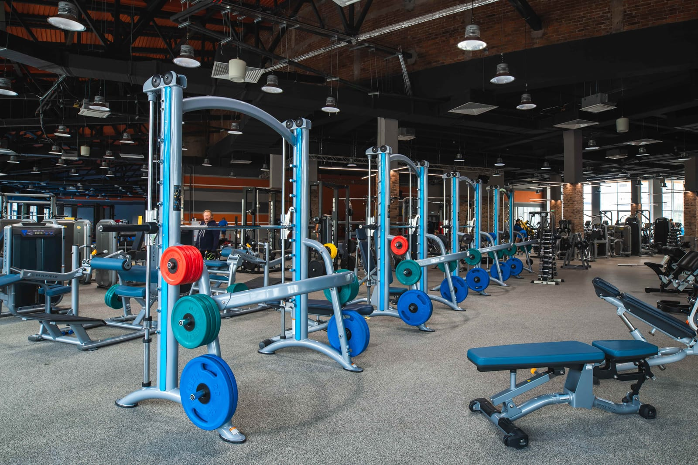
Внимание, посетители Фитнес-центра! 29 августа в фитнес-центре «Олимпия» пройдёт турнир по силовым видам спорта «Регион59». Соревнования будут идти с 9:30 до 20:00. 2 -
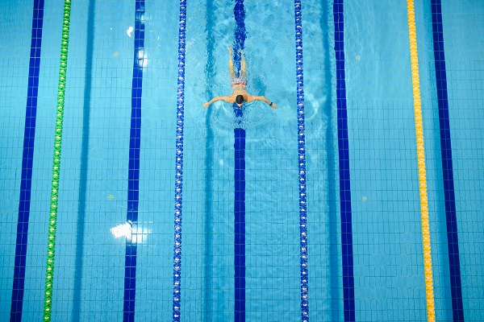
Внимание, посетители Большого бассейна! Женская душевая Большого бассейна закрыта на ремонт. Вход для женщин в бассейны через раздевалки и душевые малого бассейна. Вход д - Встреча с Чемпионкой Европы Кирой Манохиной! 25 августа в Спорткомплексе «Олимпия» пройдет пресс-конференция и автограф-сессия с Кирой Манохиной, нашей звездой, воспитанницей
- Внимание! Режим работы Спорткомплекса с 13 июля по 23 августа! Уважаемые Гости Спорткомплекса! Информируем вас о временном закрытии некоторых зон Спорткомплекса для проведения плановых техничес
-
 Внимание, режим работы Спа-центра 20, 21 и 31 августа!
Информируем вас о временном закрытии Спа‑центра в следующие дни: 20 августа — с 08:00 до 14:00; 21 августа — с 08:00 до 14:00; 31
Внимание, режим работы Спа-центра 20, 21 и 31 августа!
Информируем вас о временном закрытии Спа‑центра в следующие дни: 20 августа — с 08:00 до 14:00; 21 августа — с 08:00 до 14:00; 31
- Золото, две бронзы и новый юношеский рекорд России! Вот таким получилось выступление Киры Манохиной в составе сборной на Чемпионате Европы по водным видам спорта: Золото — в смешанно
- Летние события в Спорткомплексе «Олимпия»! Мы рады пригласить вас на летние мероприятия и интересные программы от Спорткомплекса «Олимпия», которые не только разнообразят ва
-
Внимание, посетители Спа-центра!
Информируем Вас, что 14 августа Спа‑центр будет закрыт в связи с плановой химической обработкой бассейна. 15 августа Спа‑центр воз
- Кира Манохина — серебро, бронза и новый юношеский рекорд России! Гордимся нашей воспитанницей Кирой Манохиной и ее результатами на Чемпионате Европы! Кира стала серебряным призером, а вчера вмест
- Театральные истории в «Олимпии»! Фотовыставка Андрея Чунтомова Дорогие друзья! Приглашаем вас посетить авторскую фотовыставку «Театральные истории», которая проходит в фойе главной рецепции Спо
- Идём на фестиваль в Олимпию 11 августа! Театральная компания «НМХТ» представляет фестиваль коротких форматов БАСИК, который пройдет в пустом бассейне «Олимпия» по адресу:
- Мы в ТОП-10 спортивных Центров Перми! Мы вошли в топ-10 лучших спортивных Центров города по версии Народной премии 59.RU! Спасибо, что вы с нами и поддерживаете нас — и
- Яндекс Карты отметили наш Спорткомплекс наградой «Особенно хорошее место» Дорогие друзья! В этом году наш спорткомплекс с гордостью получил награду от Яндекс Карт в категории «Особенно хорошее место»! Эта
- Фитнес-центр «Олимпия» признан лучшим фитнес-клубом Перми! Дорогие друзья! Рады сообщить, что фитнес-центр «Олимпия» признан лучшим фитнес-клубом в Индустриальном районе! Эта награда вручае
-
Новый массаж в Спа-центре!
Массаж «Кокосовый бриз» — выполняется мастером по горячему маслу с кокосом, для тех, кто ищет отдых от городской суеты и хочет ощу
-
Новая авторская омолаживающая программа в Спа-центре!
СПА-уход «Дермальное омоложение» — авторская программа омолаживающего действия с 40 лет и старше (очищение, увлажнение, полирующий
- Временный перенос женских раздевалок на 2 этаж (Фитнес-центр) 27 июля женская раздевалка будет закрыта по техническим причинам. В это время доступны раздевалки с душевыми на втором этаже. Мужс
- Первый день Первенства России по плаванию среди юниоров: великолепный старт турнира! С 21 по 25 июля в Калуге проходит Первенство России по плаванию среди юниоров и юниорок! Пермский край представляют 16 спортсменов
-
Результаты соревнований Центра Плавания «ФИНАЛ-2026»
30 мая прошли Соревнования по плаванию среди оздоровительных групп Центра Плавания (Большой бассейн) «ФИНАЛ-2026». Протокол (также
-
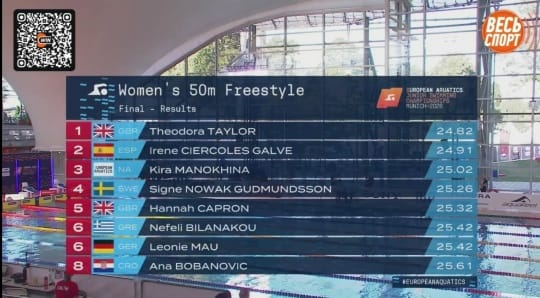
Ещё одна медаль добавлена в коллекцию Киры Манохиной! Сегодня на Первенстве Европы по плаванию Кира Манохина завоевала бронзовую медаль на дистанции 50 м в/ст. Также в полуфинале на эт -
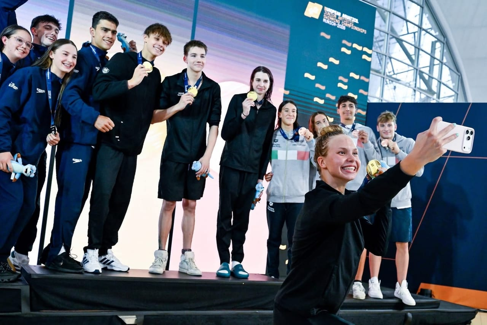
Наши ребята за два дня установили третий юниорский мировой рекорд! На этой неделе знаменитый олимпийский бассейн в Мюнхене, созданный для Олимпийских игр 1972 года, вновь окунается в мир большого с - Первая медаль с Первенства Европы по плаванию! На этой неделе знаменитый олимпийский бассейн в Мюнхене, созданный для Олимпийских игр 1972 года, вновь окунается в мир большого с
-
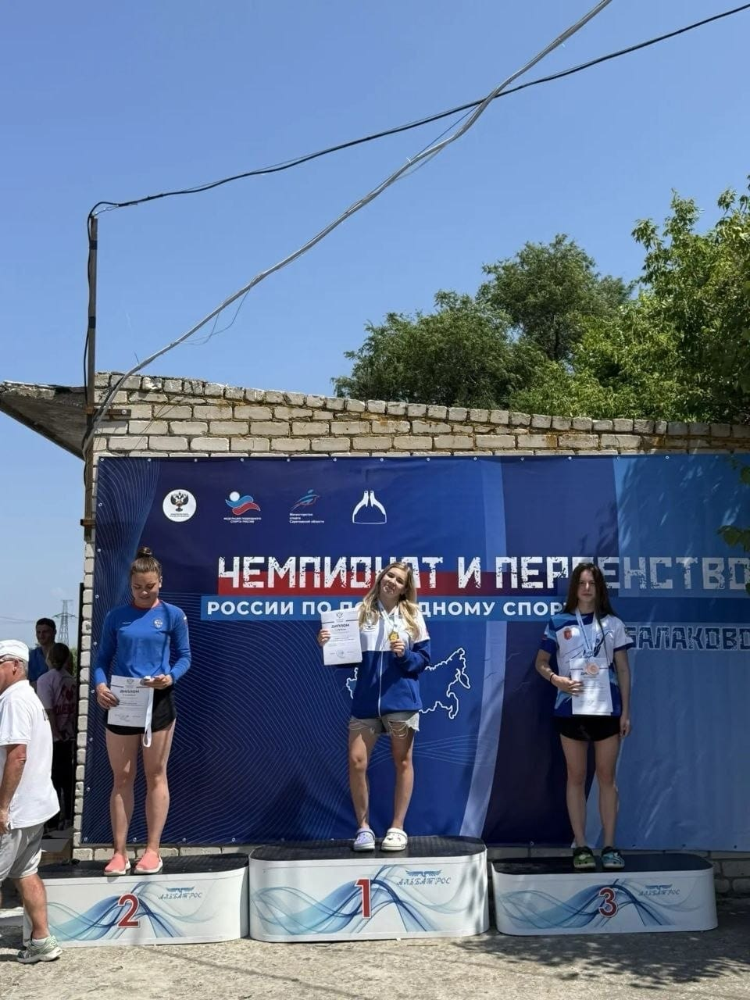
Чемпионат и Первенство России по подводному спорту, г. Балаково! С 1 по 5 июля в г. Балаково (Саратовская область) проходили Чемпионат и Первенство России по подводному спорту в дисциплине «откры - Фитнес идёт в бассейн бесплатно! С 1 по 12 июля владельцы действующих клубных карт и абонементов «Фитнес» могут бесплатно посещать бассейны «Олимпии». В рамках акц
- Огненная новость с Чемпионата России! Кира Манохина, воспитанница Спорткомплекса «Олимпия» установила юниорский рекорд России и рекорд Пермского края на дистанции 100 м
-
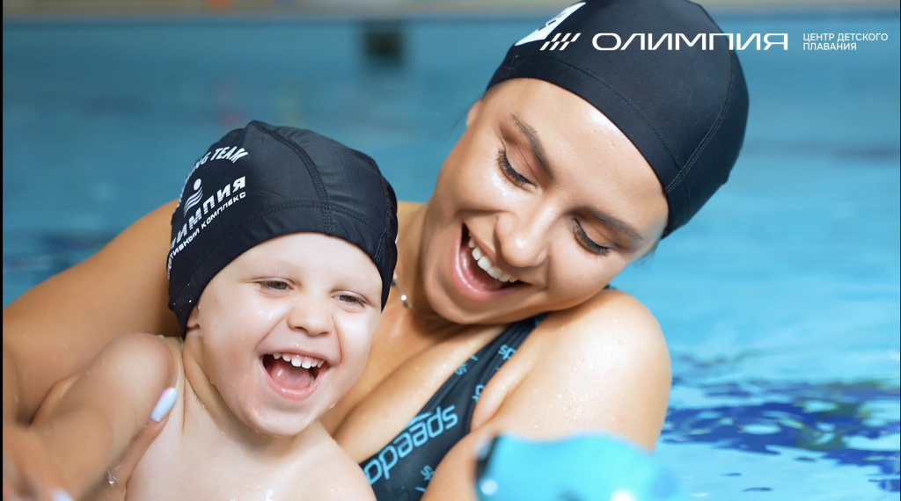
Детский бассейн «Олимпик» открыт для родителей с детьми! Детский бассейн «Олимпик» с 1 июня открыт ежедневно с 09:00 до 20:00 для свободного посещения детей до 10 лет в сопровождении взро -
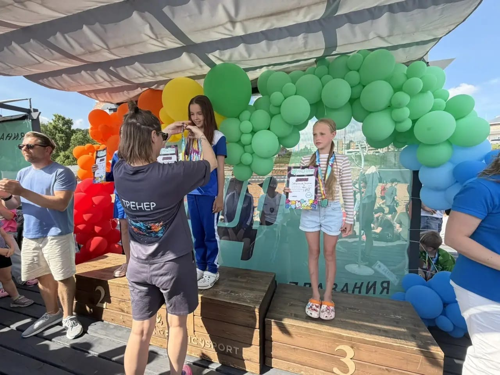
Межрегиональные соревнования по плаванию «НацПлав-Дети» 12–14 июня г. Ижевск Спортсмены «Олимпии» успешно выступили на межрегиональных соревнованиях «НацПлав-Дети». С 12 по 14 июня в Ижевске прошли межрегион - Кира Манохина завоевала бронзу на чемпионате России! Поздравляем воспитанницу Спорткомплекса «Олимпия», спортсменку ЦСП Пермского края Киру Манохину и её тренера Андрея Сергеевича Оре
- Режим работы Спорткомплекса 12 июня! 12 июня Спорткомплекс «Олимпия» будет работать в следующем режиме: Бассейны (свободное плавание), Фитнес-Центр с 08:00 до 22:30 по
-
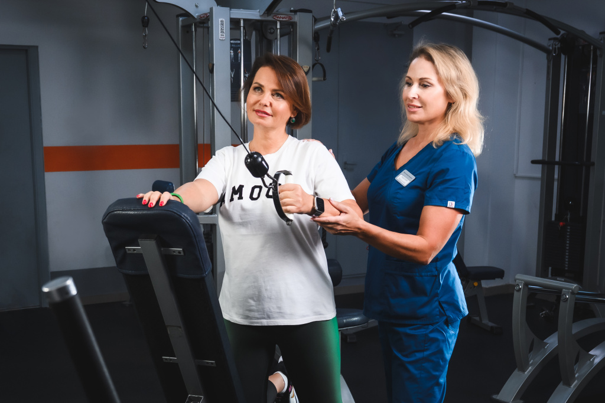
День открытых дверей в Центре Кинезитерапии 17 июня Приглашаем на День открытых дверей в Центре Кинезитерапии «Олимпия»! Кинезитерапия — это уникальная методика по использованию спец - Внимание! Ограничение работы бассейна 30 мая! 30 мая с 08:00 до 12:00 закрыты 50-м бассейн и комплекс саун в связи с проведением финальных соревнований Центра плавания. Детский
-
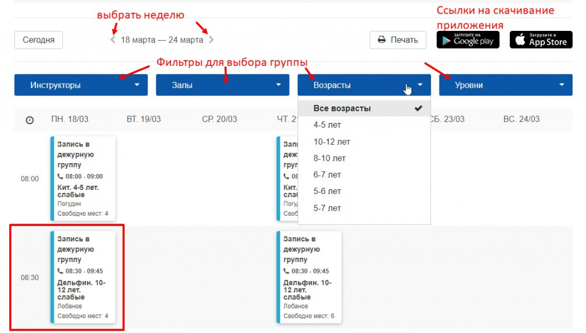
Открыта запись в дежурные группы (отработка занятий) Центр плавания Открыта запись в дежурные группы с 21 по 29 мая для отработки пропущенных занятий. Отработать пропущенные занятия также можно всей -
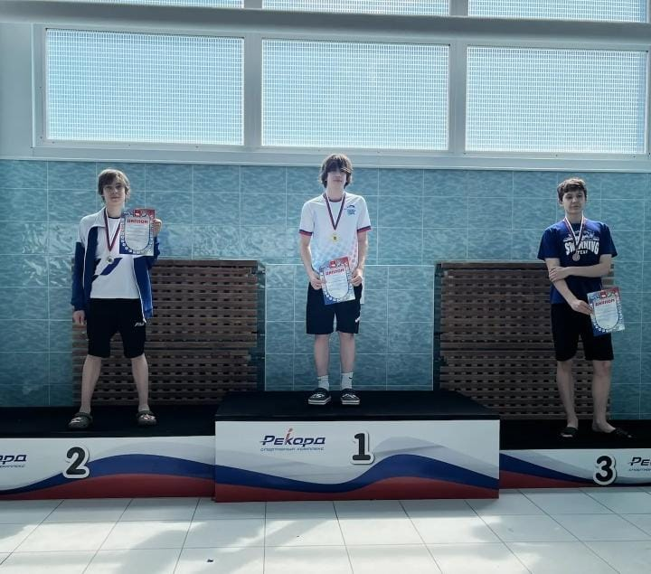
Первенство города по подводному спорту 21–22 мая! Итоги! 21–22 мая в бассейне «Рекорд» проходит Первенство города по подводному спорту. После второго дня соревнований наши спортсмены заво -
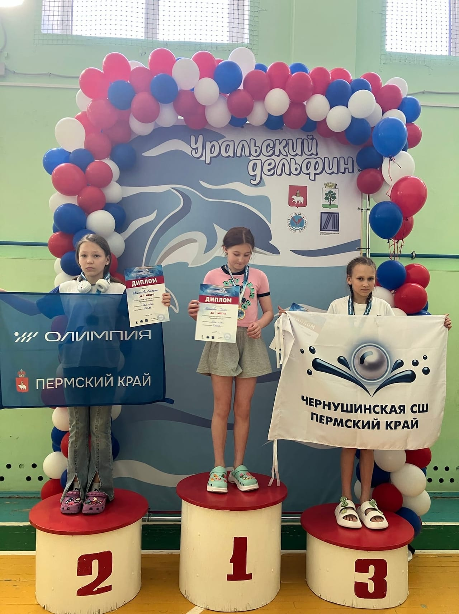
XXVI турнир по плаванию «Уральский дельфин» г. Оса, 20–23 мая! 20–23 мая в г. Оса проходил XXVI турнир по плаванию «Уральский дельфин». На соревнованиях участвовали спортсмены со всего Пермског - Внимание! Ограничение работы бассейна 24 мая! 24 мая с 10:45 до 15:00 закрыты 50-м бассейн и комплекс саун. Установка дорожек по 25 м в связи с проведением спортивного праздник
-
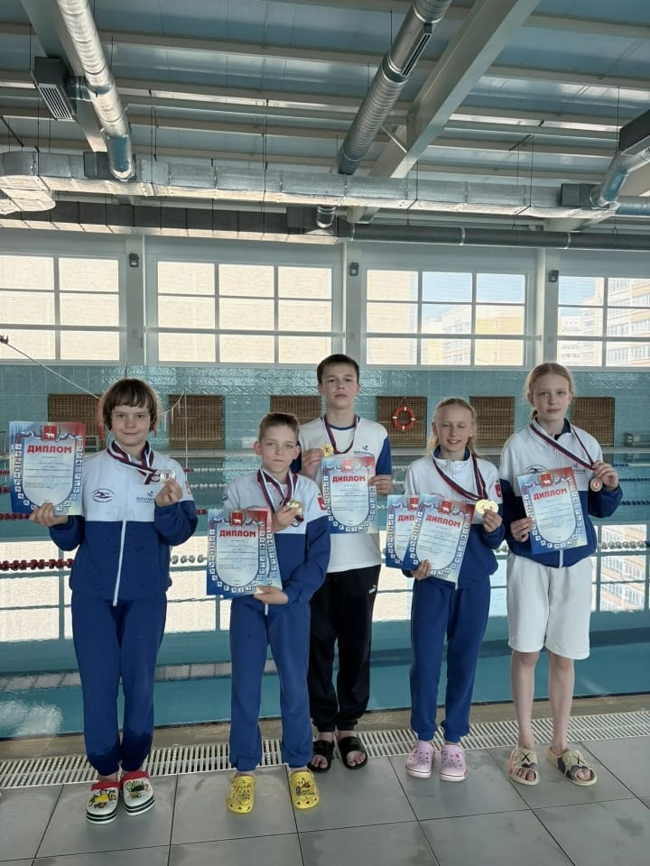
Первенство города по подводному спорту 21–22 мая! 21–22 мая в бассейне «Рекорд» проходит Первенство города по подводному спорту. После первого дня соревнований наши спортсмены заво -
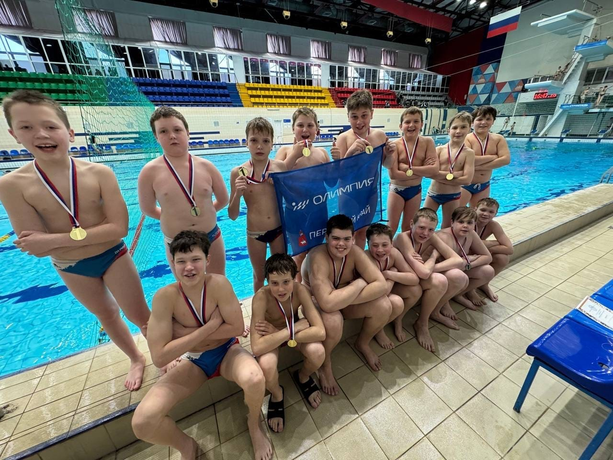
Открытое первенство г.Челябинска по водному поло! С 4 по 6 мая 2026 года Челябинск стал ареной захватывающих водных баталий – прошло открытое первенство по водному поло среди юноше - Внимание! Ограничение работы бассейна 17 мая! В связи с проведением выпускных соревнований по плаванию для оздоровительных групп Центра плавания 17 мая с 08:00 до 12:00, будут
- Внимание, посетители Фитнес-центра «Олимпия» 16 и 17 мая в Фитнес-центре «Олимпия» пройдет турнир по силовым видам спорта «ПЕРМСКИЙ ПЕРИОД ХII». 15 мая с 19:00 будет монтаж пл
- Итоги 38-го Кубка России по бодибилдингу! Три золота и бронза — отличный результат! 26 апреля завершился 38-й Кубок России по бодибилдингу. Спортсмены «Олимпии» показали вы
- Режим работы в майские праздники Бассейны (свободное плавание): 1, 2, 3, 9, 10, 11 мая с 8:00 до 22:30 по тарифам выходного дня. 1,3,9 мая — Детский бассейн «Олимп
- Внимание! Ограничение работы бассейна 6, 7 и 8 и мая! Уважаемые посетители Спорткомплекса! 6 мая с 12:00 до 19:00 количество дорожек для свободного плавания ограничено. 7 и 8 мая с 10:
- Мастер-класс «Здоровый позвоночник — спина без скованности» в Фитнес-центре! 23 апреля 2026г. пройдет мастер-класс «Здоровый позвоночник — спина без скованности» Время проведения: с 18:30 до 21:00. Чувствует
- Внимание! Ограничение работы бассейна 16, 17 и 19 апреля! Уважаемые посетители Спорткомплекса! 16 апреля с 19:00 до 21:00 ограничение дорожек для свободного плавания. 17 апреля с 10:45 до
- Фитнес-центр «Олимпия» – номинанты премии 2ГИС 2026! Дорогие друзья и гости Фитнес-центра «Олимпия!» Мы рады сообщить, что стали номинантами престижной премии 2ГИС 2026! Это стало воз
-
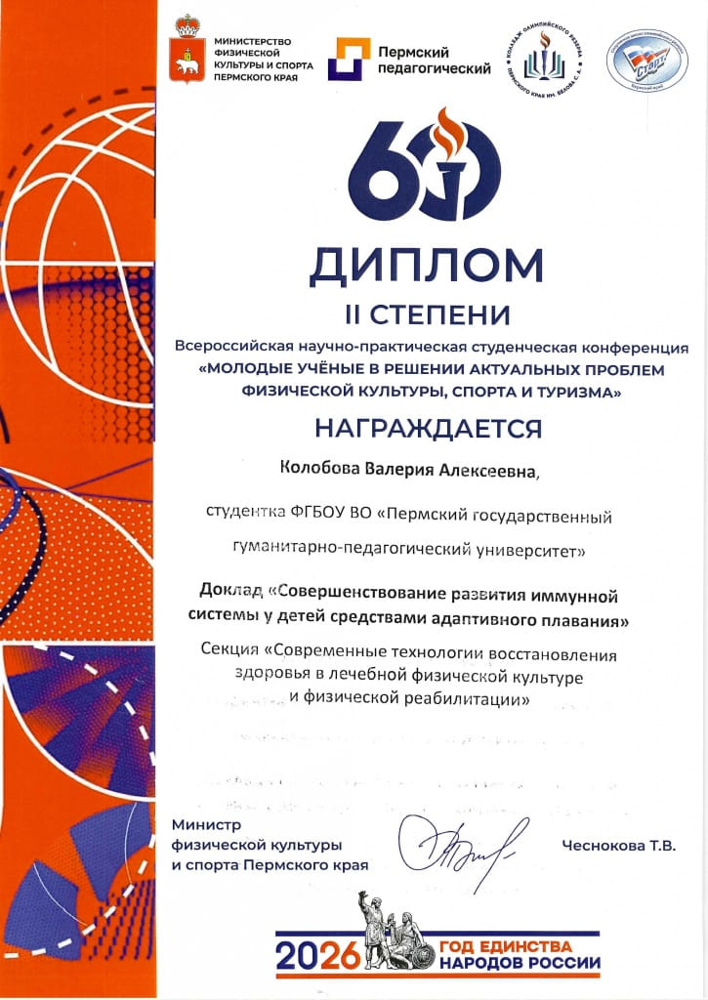
Успех Валерии Колобовой: второе место на научно-практической конференции! 31 марта в рамках мероприятий, посвящённых 60-летию ГБПОУ «Колледжа олимпийского резерва Пермского края им. Белова С. А. », прошла -
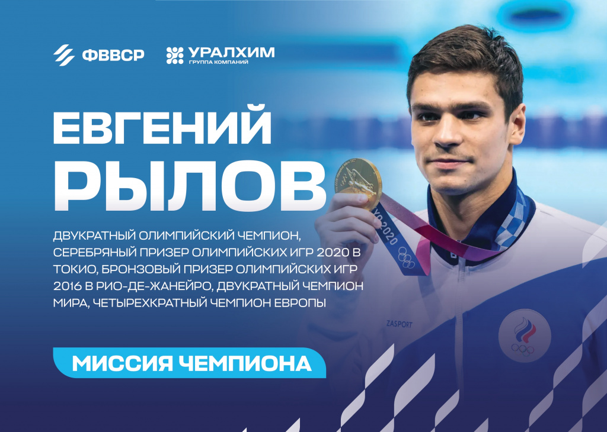
Двукратный олимпийский чемпион по плаванию Рылов Евгений в «Олимпии!» 16 апреля с 17:00 до 19:00 в Спорткомплексе «Олимпия» пройдет мастер-класс и автограф-сессия с двукратным олимпийским чемпионом по - «Летний класс» — плавание для летних лагерей и площадок! Посещение бассейна для детских школьных площадок и лагерей! В начале лета купаться в открытых водоёмах ещё холодно и небезопасно.
- Всероссийские соревнования по бодибилдингу «Титаны Урала» 2026 г. Екатеринбург 11 апреля в г. Екатеринбурге прошёл Всероссийский турнир «Титаны Урала», где собралось рекордное количество участников — 305 спорт
-
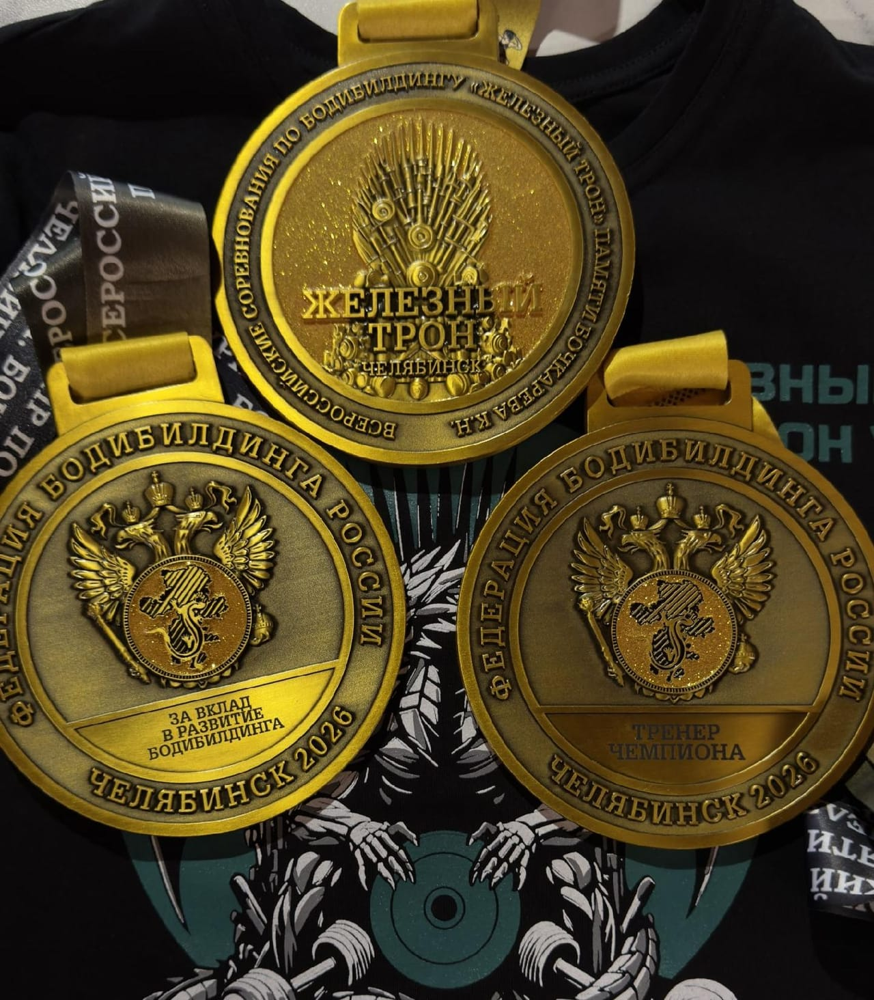
Всероссийские соревнования по бодибилдингу «Железный трон» г. Челябинск! 5 апреля в г. Челябинске прошёл Всероссийский мастерский турнир «Железный трон V». Спортсмены спорткомплекса «Олимпия» показали до -
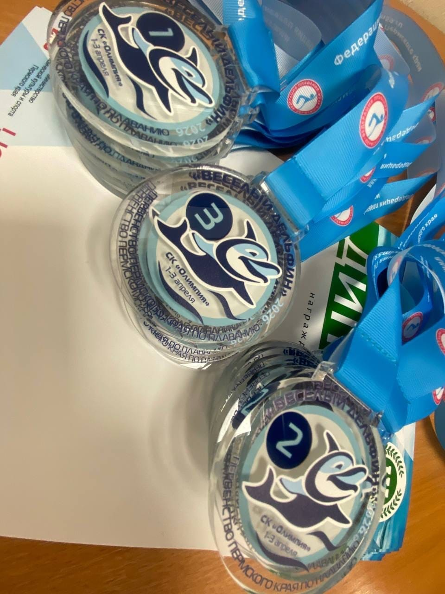
Первенство края по плаванию «Веселый дельфин». Итоги! С 1 по 3 апреля в Спорткомплексе «Олимпия» состоялись отборочные соревнования по плаванию, где более 210 пловцов из 20 региональны -
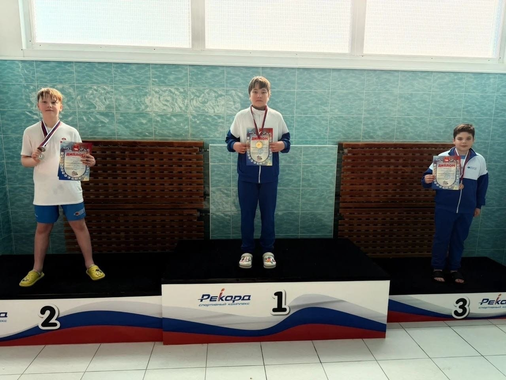
Первенство г. Перми по подводному спорту 2–3 апреля! Первенство г. Перми по подводному спорту прошло 2 и 3 апреля 2026 года в СК «РЕКОРД». Соревнования, посвященные Году единства наро - Важная информация для посетителей Фитнес-центра! 5 апреля в тренажёрном зале пройдёт турнир по армрестлингу и подъему штанги на бицепс «ПОЕХАЛИ». Соревнования пройдут на главной с
- Мастер-класс от чемпиона Мира и Европы Сергея Фесикова! С 1 по 3 апреля в Спорткомплексе «Олимпия» проходит Первенство Пермского края по плаванию «Весёлый дельфин». Участвуют в соревнова
- Результаты соревнований Центра Плавания «Зима-2026» С 14 по 21 февраля 2026г. прошли Соревнования по плаванию среди оздоровительных групп Центра Плавания (Большой бассейн) «Зима 2026
-
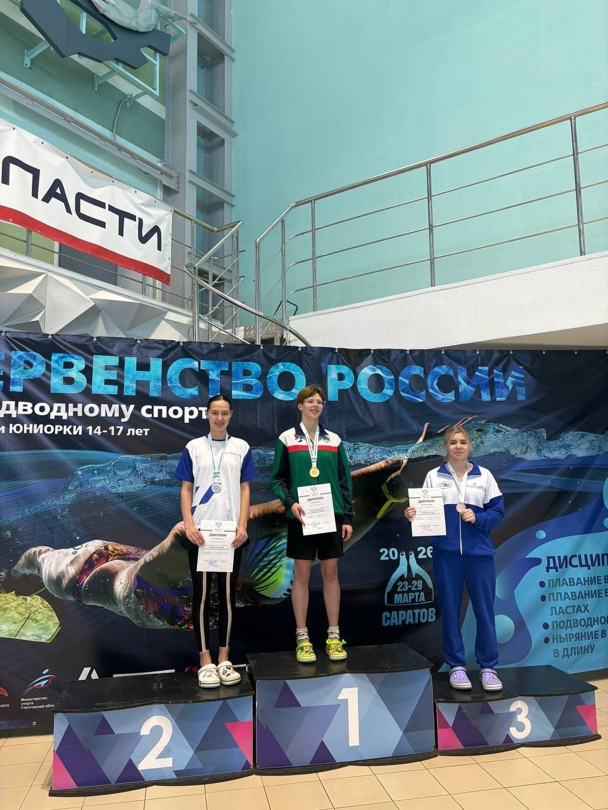
Первенство России по подводному спорту 23–29 марта, г. Саратов С 23 по 29 марта в г. Саратов, проходит Первенство России по подводному спорту (плавание в ластах, плавание в классических ластах, -
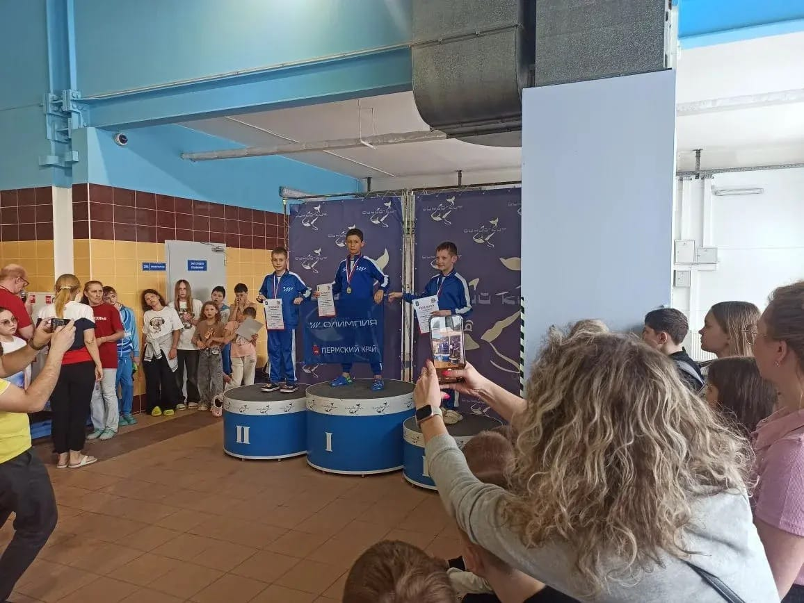
Соревнования «День спиниста 2026» г. Кунгур С 20 по 21 марта 2026 года в бассейне МАУ ДО «СШ «Синий кит» г.Кунгура прошли соревнования «День спиниста-2026». В соревнованиях п -
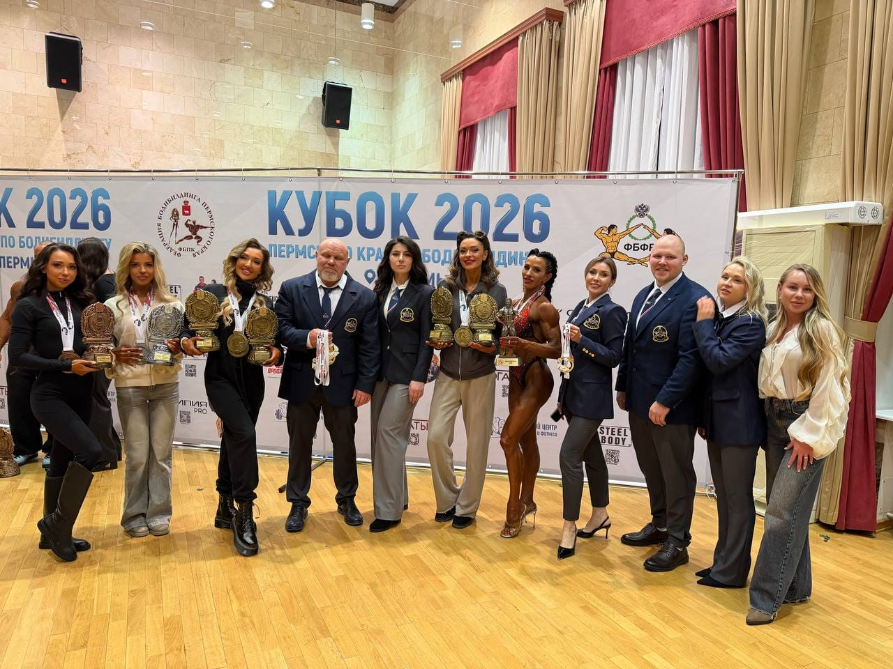
Кубок Пермского края по бодибилдингу 21 марта! Гордимся нашей командой! 21 марта сборная Спорткомплекса «Олимпия» блестяще выступила на Кубке Пермского края по бодибилдингу. Рез - «Женский день» в Фитнес-центре 26 марта 26 марта 2026г. пройдет «Женский день: Секреты легкости и сияния». Время проведения: с 18:30 до 21:00. Приглашаем провести вечер с
- Товарищеский матч по водному поло 14 марта! В ходе подготовки к заключительному этапу Первенства России юные ватерполисты Спорткомплекса «Олимпия» 14 марта 2026г. провели мат
-
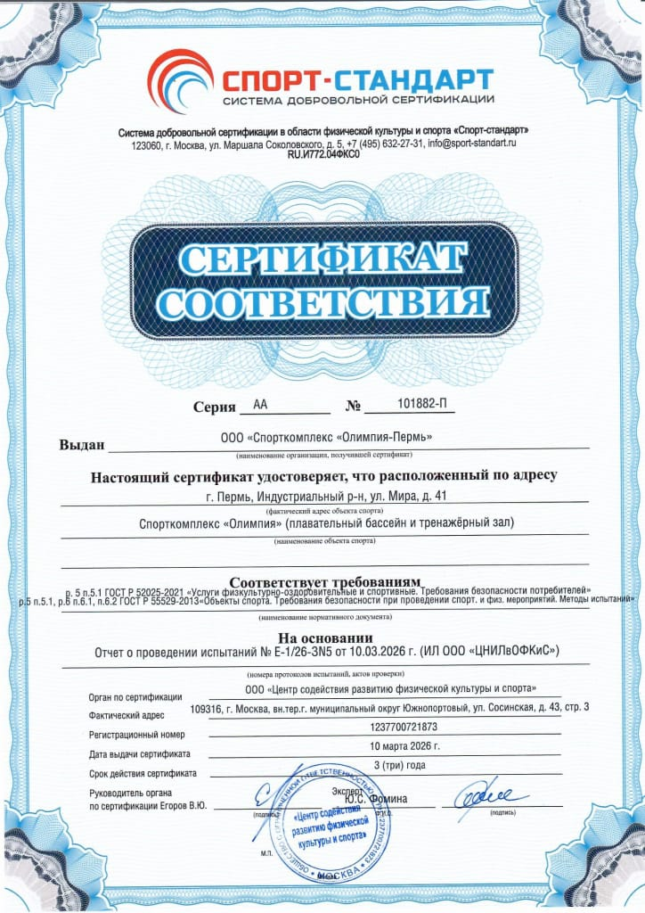
Отличные новости от «Олимпии»! Друзья, спешим поделиться с вами замечательным событием! Спорткомплекс «Олимпия» успешно прошёл очередную сертификацию по спорт-ст -
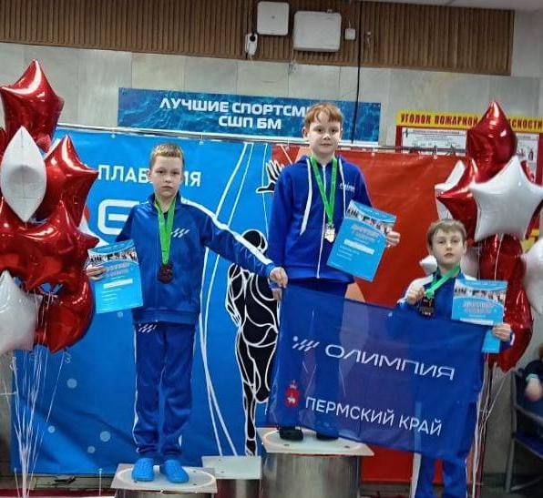
Лига плавания «БМ 2026»- 1 этап памяти Л. И. Моняковой. 5–6 марта 2026 года в Перми прошли соревнования по плаванию «Лига плавания БМ 2026»- 1 этап памяти Л. И. Моняковой Наши спортсмены -
Новые услуги в СПА-центре!
Рады сообщить, что в SPA-центре расширился спектр услуг! Теперь вы можете побаловать себя еще большим разнообразием процедур для к
- Внимание! Режим работы Спорткомплекса 8 и 9 марта! 9 марта Спорткомплекс «Олимпия» будет работать в следующем режиме: Бассейны и Фитнес-центр: с 08:00 до 22:30 по тарифам выходного
- Внимание! Режим работы бассейнов 6 марта! Уважаемые посетители! 6 марта с 10:45 до 13:00 закрыты 50-м Бассейн и комплекс саун в связи со сдачей норм ГТО (плавание) школьник
- Итоги соревнований по плаванию Rustic Cup-1 этап. г. Ижевск 27.02–01.02 Поздравляем с успешным выступлением воспитанников «Олимпии» на Республиканских соревнования по плаванию Rustic Cup-1 этап. г. Ижев
-
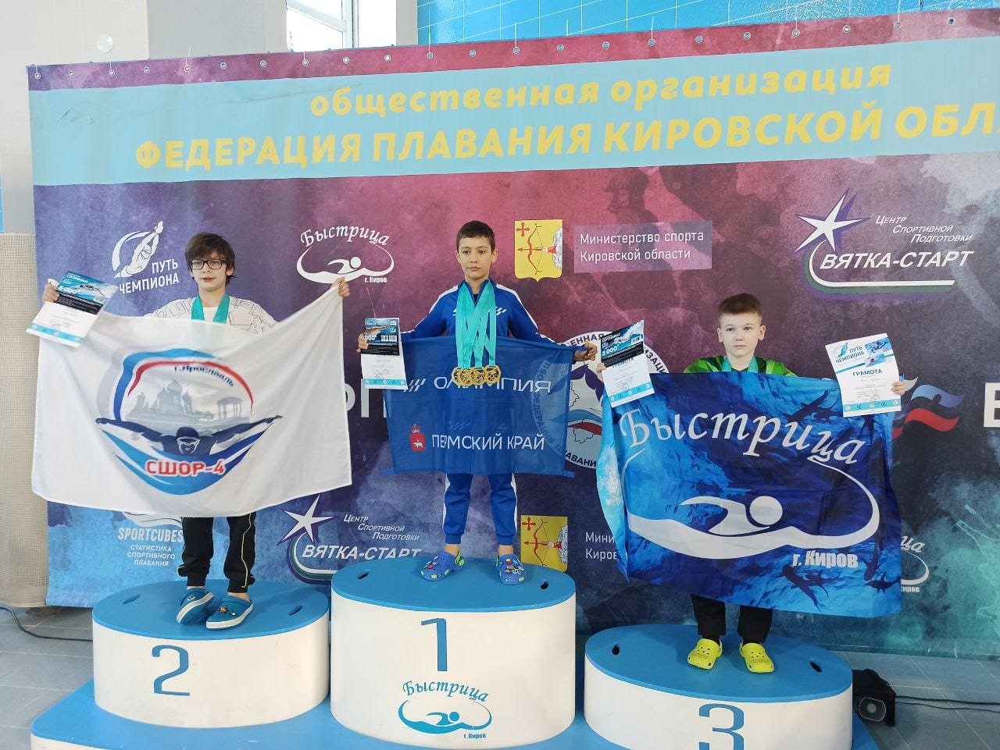
Итоги первого этапа соревнований «Путь чемпиона» г. Киров 24–27 февраля 2026 года в спорткомплексе «Быстрица» г. Киров, прошли соревнования по плаванию «Путь чемпиона» — 1 этап. Наши спорт -
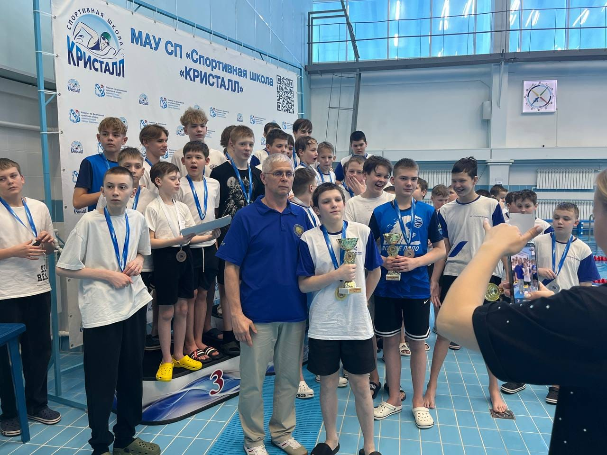
г. Березники 22 февраля! Первенство края по водному поло! 22 февраля в г. Березники прошёл захватывающий турнир по водному поло, посвящённый Году единства народов России. Шесть команд юнош - Режим работы Спорткомплекса 23 февраля! 23 февраля Спорткомплекс «Олимпия» будет работать в следующем режиме: Бассейны (свободное плавание), Фитнес-центр: С 08:00 до 22:3
- Чемпионат и Первенство Пермского края по плаванию 10–12 февраля. Итоги! С 10 по 12 февраля в Спорткомплексе « Олимпия» состоялся Чемпионат и Первенство Пермского края по плаванию. Эти соревнования были
- Внимание! Ограничение работы бассейна с 9 по 12 февраля! 9 февраля с 12:00 до 19:00 количество дорожек для свободного плавания будет ограничено в связи с проведением Чемпионата Пермского
- Первенство г. Перми по плаванию 27–28 января 2026. Итоги! 27–28 января 2026 года в Спорткомплексе «Олимпия» прошло Первенство г.Перми по плаванию. Воспитанники Спорткомплекса показали отли
-
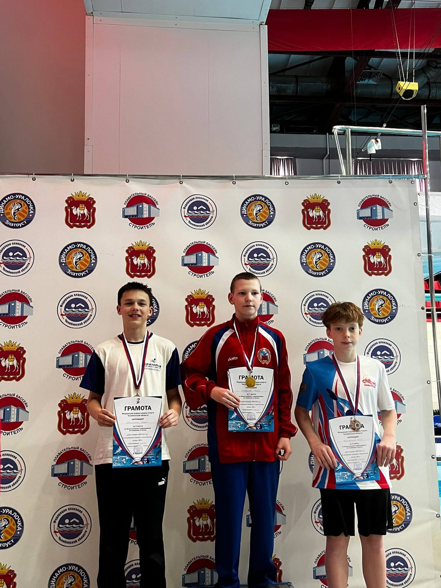
Всероссийские соревнования по подводному спорту г.Челябинск 26–29 января. Итоги! С 26 по 29 января в г.Челябинск состоялись Всероссийские соревнования по подводному спорту. Участники в возрасте от 12 до 17 лет с - Внимание! Ограничение работы бассейна 27 и 28 января! Уважаемые посетители! Обратите внимание на изменения в режиме работы бассейна: 27 и 28 января с 10:15 до 14:30 будут закрыты 50-м
- Итоги первого дня Первенства г. Перми по плаванию 27 января! Сегодня в Спорткомплексе «Олимпия» стартовало Первенство г.Перми по плаванию. Ссылка на результаты первого дня соревнований здесь
- Успех пермских пловцов в 2025 году! Федерация плавания Пермского края подвела итоги 2025 года, который стал по-настоящему триумфальным для пермских спортсменов. Пловц
-
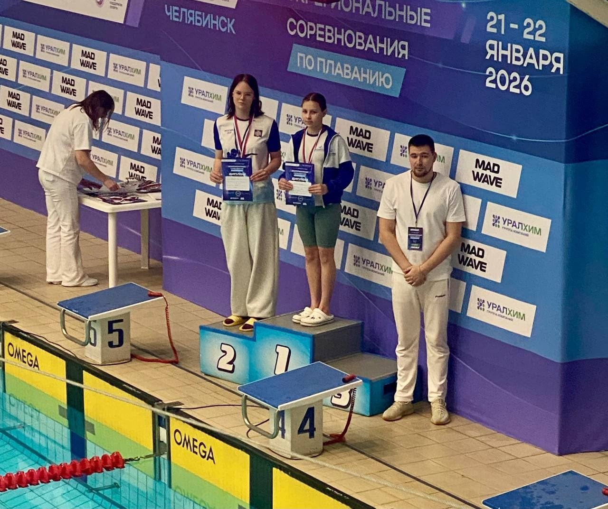
Межрегиональные соревнования по плаванию в г.Челябинск 21–22 января С 21 по 22 января в г. Челябинск прошли Межрегиональные соревнования по плаванию. Впервые в 2026 году стартуют новые официальные с - Результаты соревнований Центра Плавания «Осень-2025» С протоколом соревнований по плаванию среди оздоровительных групп Центра плавания «Осень-2025» можно ознакомиться здесь Подробност
-
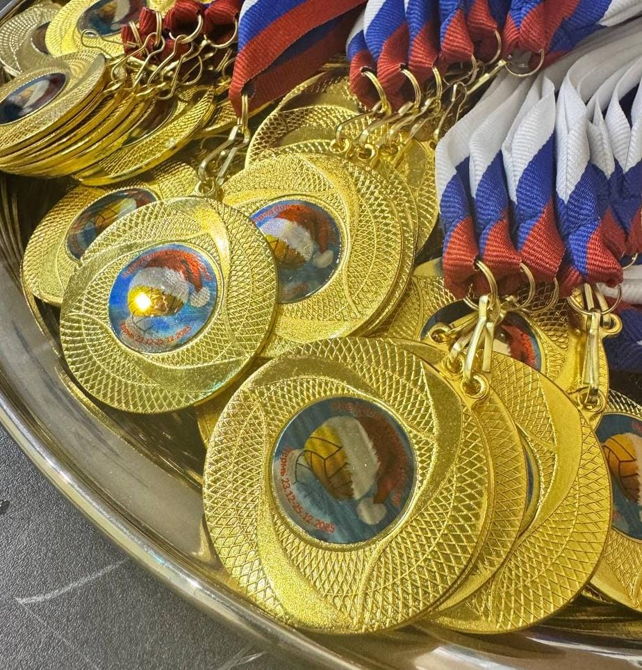
Предновогодний турнир по водному поло 23, 24 и 25 декабря! 23, 24 и 25 декабря в бассейне «Олимпия» прошёл Предновогодний Турнир по водному поло среди юношей 2014г.р и младше. Города участн - Результаты соревнований Центра Плавания «Осень-2025» 15–22 ноября С 15 по 22 ноября прошли Соревнования по плаванию среди оздоровительных групп ЦП (Большой бассейн) «Осень-2025» Индивидуальные сер
-
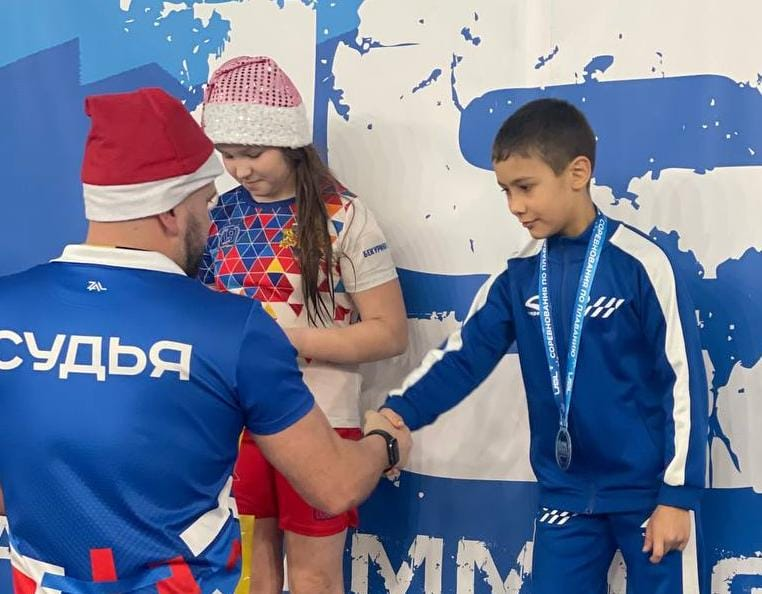
Итоги соревнований по плаванию «Уральская Лига плавания USL» г. Первоуральск 21 декабря 2025 года в г. Первоуральск прошли соревнования по плаванию «Уральская Лига плавания USL» 6 наших воспитанников 2015–20 - Юный спортсмен выиграл межрегиональные соревнования по плаванию в г. Киров. С 12 по 14 ноября 2025 года в спорткомплексе «Быстрица» в Кирове прошёл финальный этап межрегиональных соревнований по плаванию «П
- Соревнования Центра плавания «Осень — 2025» 15–22 ноября С 15 по 22 ноября пройдут соревнования «ОСЕНЬ — 2025» по плаванию среди оздоровительных групп, занимающихся в Большом бассейне. Оз
- Внимание! Режим работы фитнес-центра 12 ноября! Уважаемые клиенты фитнес-центра «Олимпия!» 12 ноября тренажёрный зал работает до 13:00. Последний впуск в 12:00. Посещение бассейн
- Внимание! Ограничения работы бассейна с 11 по 14 ноября! 11 ноября с 12:00 до 19:00 количество дорожек для свободного плавания будет ограничено в связи с проведением Первенства Пермского
- Поздравляем с Днём рождения Манохину Киру! Сегодня поздравляем с Днём рождения воспитанницу Спорткомплекса, Члена сборной России по плаванию и серебряного призёра Первенства
- Режим работы Спорткомплекса с 1 по 4 ноября С 1 по 4 ноября Спортивный комплекс «Олимпия» будет работать по следующему расписанию: 1 ноября (тарифы буднего дня): Бассейны с 0
-
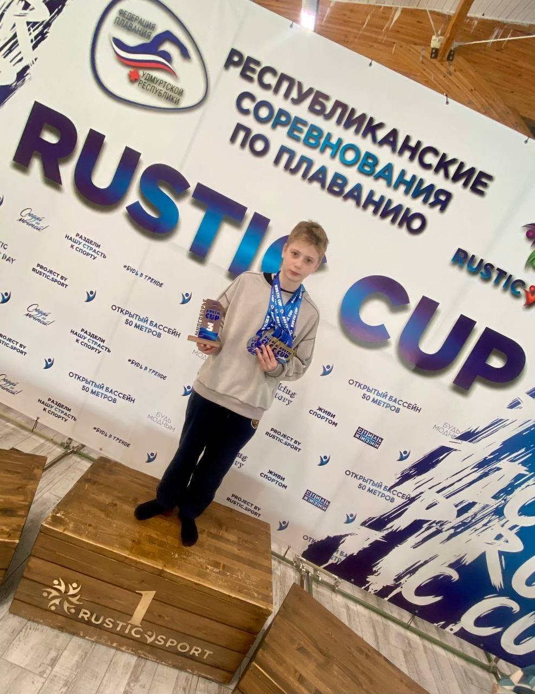
Итоги соревнований по плаванию Rustic Cup-4 этап. г. Ижевск 24.10–26.10 Поздравляем с успешным выступлением воспитанников «Олимпии» на Республиканских соревнования по плаванию Rustic Cup-4 этап. г. Ижев -
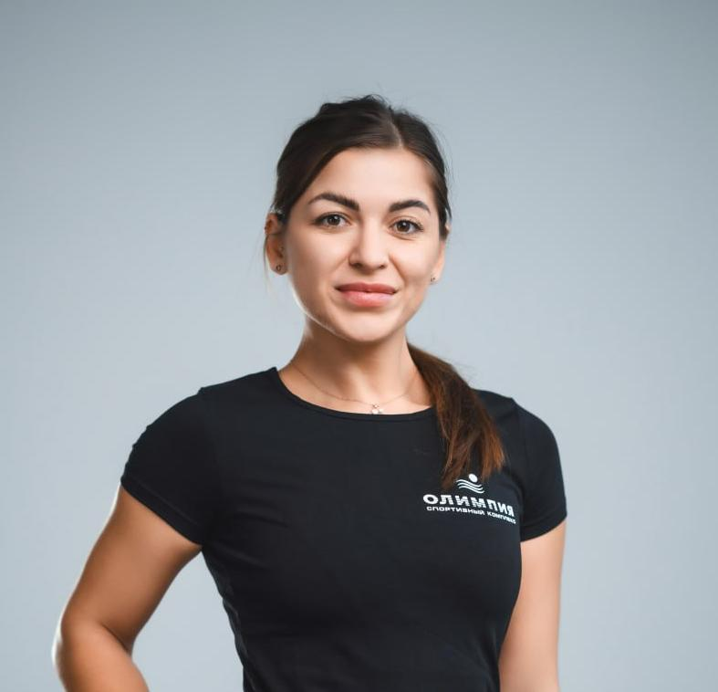
Поздравляем Тимонину Валерию и Гладких Валерию! Поздравляем тренеров фитнес-центра Тимонину Валерию и Гладких Валерию с выполнением норматива кандидата в мастера спорта по бодиби - Внимание! Ограничение работы бассейнов 4 октября! Уважаемые посетители! Обратите внимание на изменения в режиме работы бассейнов: 4 октября с 10:45 до 14:00 бассейны и комплекс сау
-
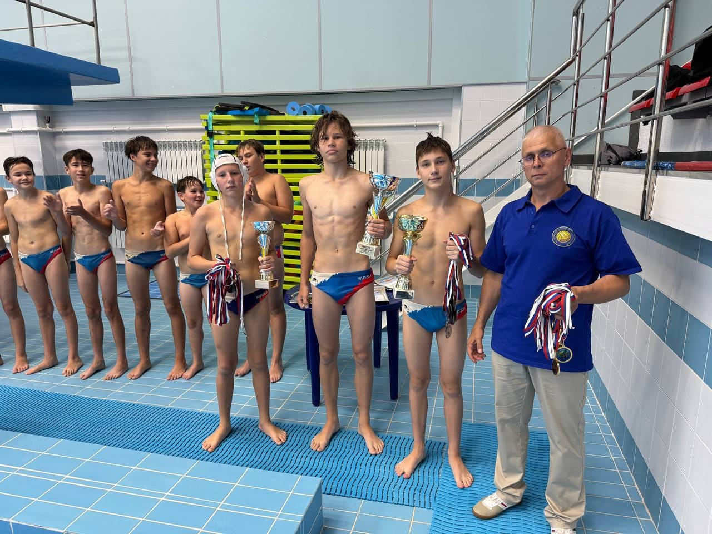
Финал Первенства Пермского края по водному поло г. Березники! 21 сентября, в г. Березники прошёл финал Первенства Пермского края по водному поло, среди юношей до 15, 16, 18 лет. Поздравляем на -
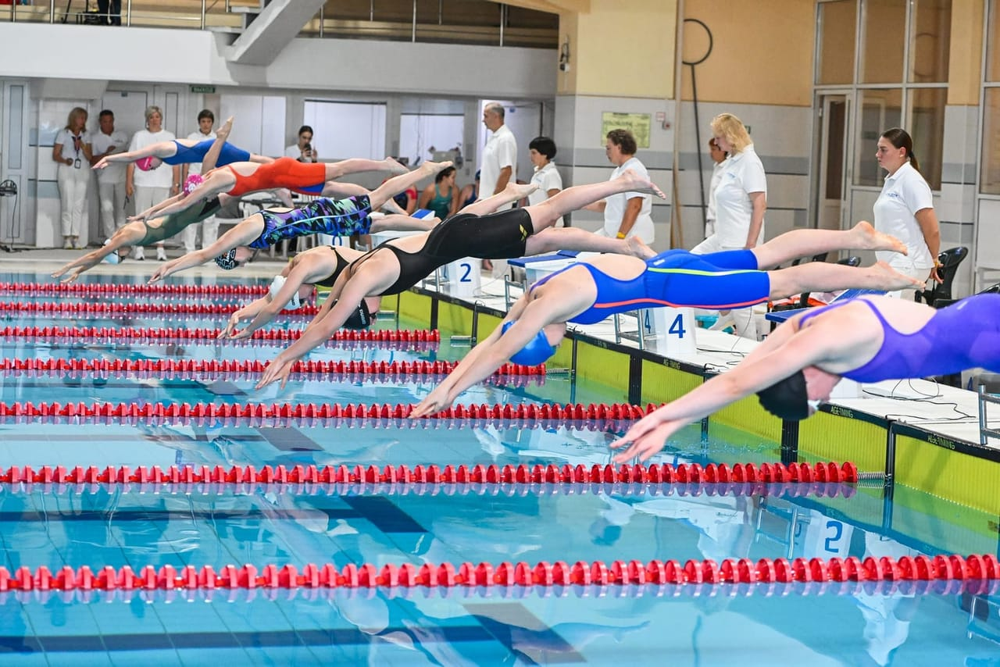
Итоги Краевых соревнований по плаванию с 10 по 12 сентября! С 10 по 12 сентября состоялись Краевые соревнования по плаванию, которые были организованы при поддержке филиала «ПМУ» АО «ОХК «Ур - Внимание! Соревнования в Фитнес-центре 13 и 14 сентября! В эти выходные пройдут соревнования по силовым видам спорта «Регион 59». Соревнования продлятся два дня: 13.09 (сб) — с 10:00 до 1
-
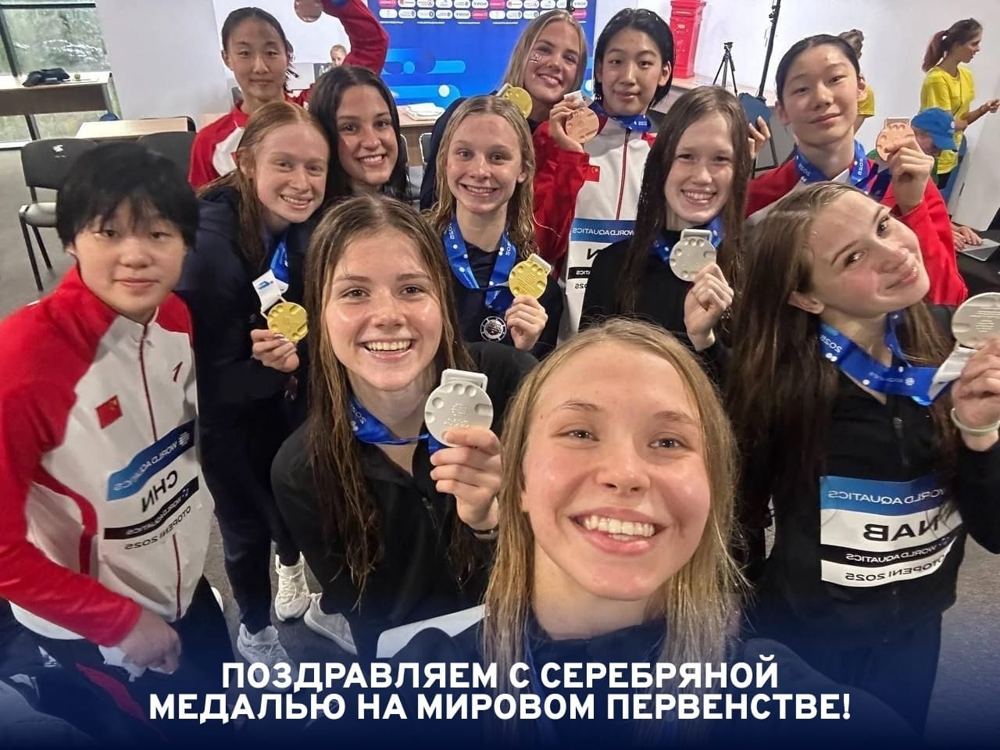
Кира Манохина — серебряный призёр Первенства мира! Наша воспитанница КИРА МАНОХИНА — серебряный призёр Первенства мира! В составе сборной России на эстафете 4×100 м вольным стилем с - Режим работы бассейна 9 и с 10 по 12 сентября (ограничение количества дорожек) В связи с проведением Краевых соревнований по плаванию 9 сентября с 12:00 до 19:00 количество дорожек для свободного плавания огра
-
Запись на ЭКГ и Энтеробиоз!
Уважаемы родители! Напоминаем, до начала занятий в группах Центра Плавания необходимо предоставить следующие документы: ЭКГ Для де
-
SPA-центр открыт с 27.08.2025г!
Друзья, радостная новость, SPA-центр открыт! Ждём Вас ежедневно с 8:00–22:00. Записаться на услуги.
-
СПА центр и прокат временно не работают, открытие с 27 августа!
SPA-центр и прокат временно не работают! Открытие в среду 27.08.2025г. Приносим извинения за предоставленные неудобства! Записатьс
- 14 июля Спорткомплекс закрыт! Уважаемые друзья! 14 июля 2025г. Спорткомплекс будет закрыт для посещения. Все действующие на 14 июля 2025г. абонементы и клубные
-
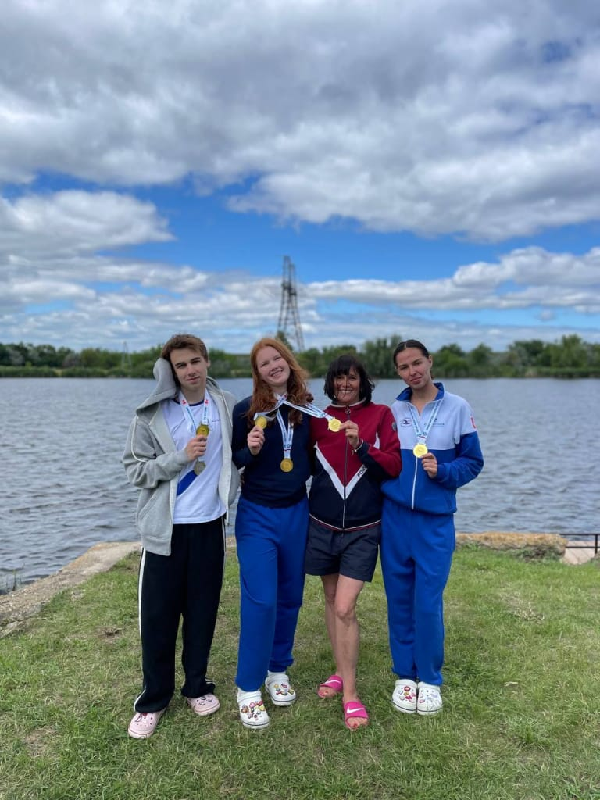
Итоги Первенства России по подводному спорту, г. Балаково 25–29 июня С 25 по 29 июня 2025 года, в г.Балаково (Саратовская область) проходило Первенство России по подводному спорту, открытая вода. По -
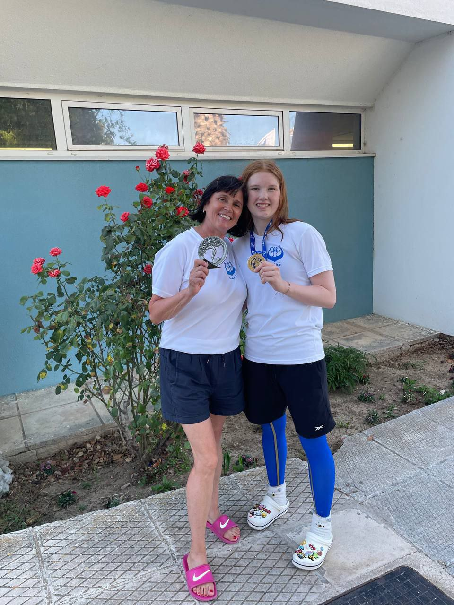
Бронза на Первенстве Мира в Греции 2025г. Отличные новости! Поздравляем Мастера спорта международного класса Полину Некрасову и ее тренера Светлану Анатольевну Пушкареву с - Режим работы спорткомплекса 12 и 13 июня! Бассейны (свободное плавание): с 08:00 до 22:30 по тарифам выходного дня; Детский бассейн «Олимпик» открыт для родителей с детьми
- Изменения в расписании аквааэробики! Уважаемы посетители! 5 и 12 июня отмена бесплатных занятий аквааэробикой «АКВА-ЛАЙТ». Посмотреть актуальное расписание .
-
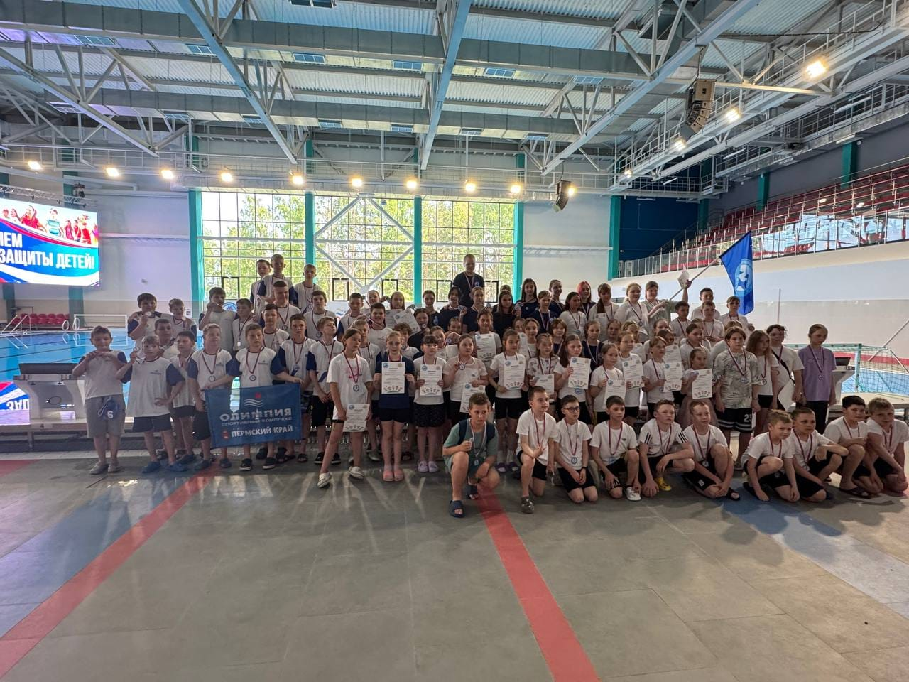
Итоги турнира, посвященного «ДНЮ ЗАЩИТЫ ДЕТЕЙ». г. Первоуральск. С 28 мая по 1 июня в г.Первоуральск состоялся турнир по водному поло среди мальчиков и девочек 2013г.р и младше. В турнире принима -
Итоги Выпускных соревнований Центра плавания 25 мая 2025г.
25 мая 2025 года состоялись детские выпускные соревнования, которые стали важным событием для маленьких спортсменов . В мероприяти
-
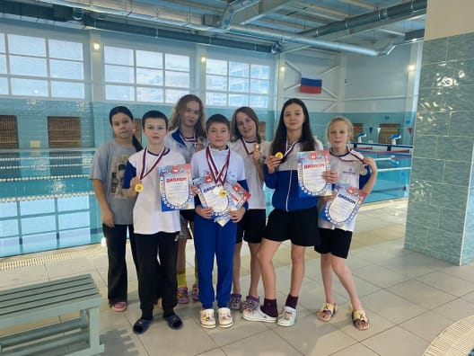
Финальные соревнования Центра плавания 18.05.2025г. 18 мая 2025г. в спорткомплекс «Олимпия» прошли Финальные соревнования по плаванию среди детей оздоровительных групп Центра плавани -
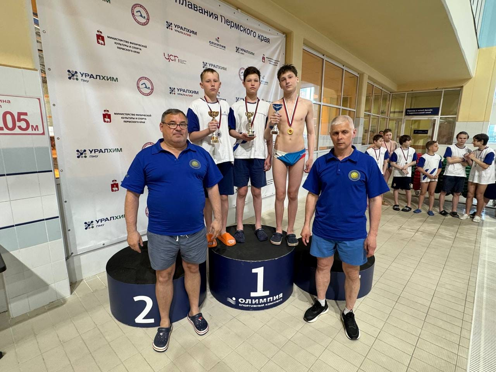
Итоги Первенства края по водному поло 17.05.25 17 мая, в спорткомплексе «Олимпия-Пермь» прошло Первенство Пермского края по водному поло, среди юношей до 15 лет и Кубок «Олимпии -
Протокол соревнований Центра Плавания «ВЕСНА 2025»
Поздравляем с завершением финальных соревнований по плаванию среди оздоровительных групп Центра плавания! Ребята показали себя про
- Ограничения работы бассейна 17 и 18 мая 2025 г. В Олимпии в большом бассейне: — 17 мая 2025 г. с 15:00 до 19:00 пройдут соревнования по водному поло. Количество дорожек для свобо
- Поздравляем с победой воспитанников «Олимпии»! Поздравляем победителей и призеров Первенства России по подводному спорту, среди девушек и юношей 2012–2013 г.р. Наши спортсмены п
-
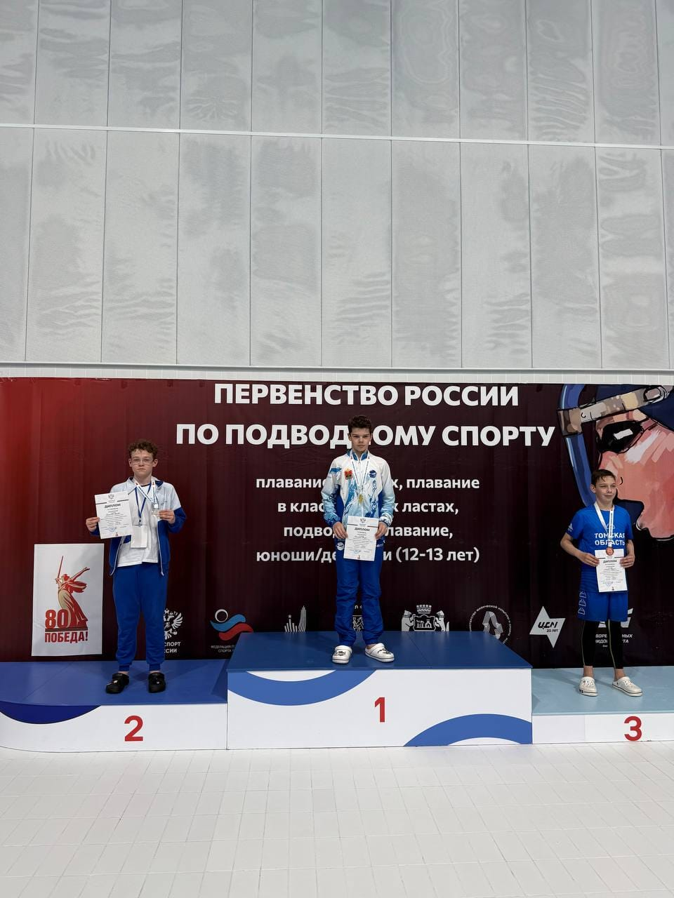
Итоги 3-го дня соревнований по плаванию Первенство России г. Екатеринбург в г.Екатеринбург завершились соревнования по плаванию Первенство России и третий день принес захватывающие результаты: Юнусова Ами -
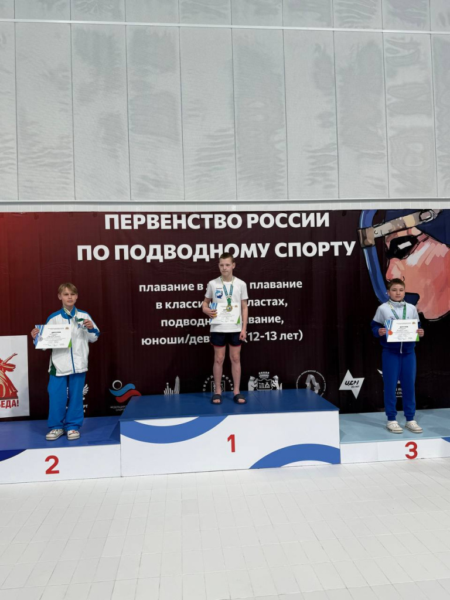
Второй день соревнований по плаванию Первенство России г. Екатеринбург По итогам второго дня соревнований по плаванию воспитанница Спортивного комплекса «Олимпия» Юнусова Амина завоевала золото на дист -
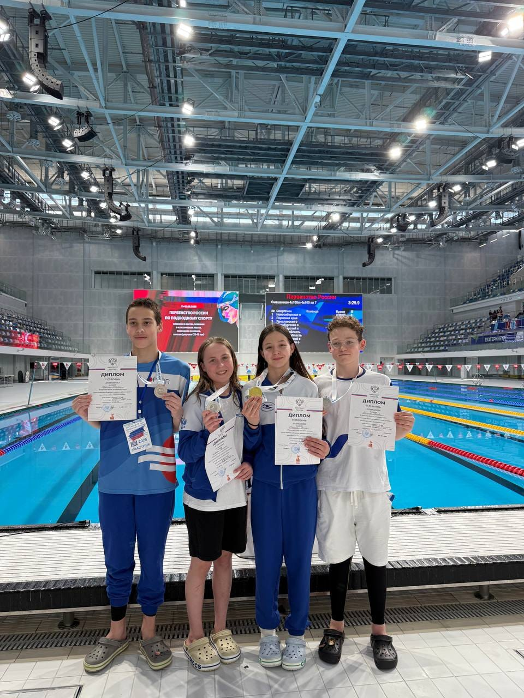
Первый день соревнований по плаванию Первенство России г. Екатеринбург Прошел первый день соревнований Первенство России, среди девушек и юношей 2012–2013 г.р., в г. Екатеринбург. Принимало участие 307 -
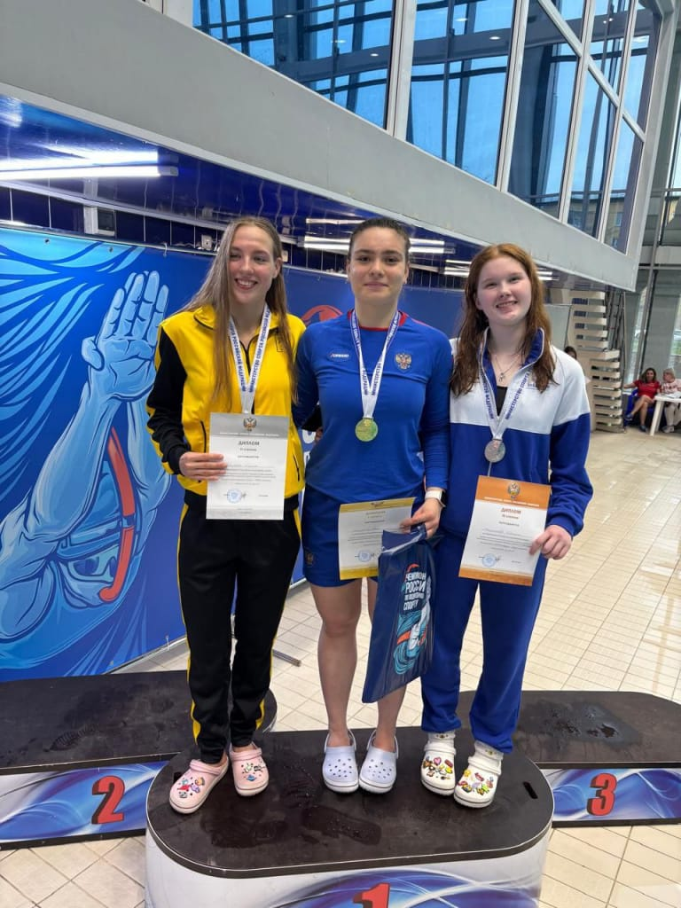
Чемпионат России по подводному спорту г.Новосибирск 2025 г. С 29 апреля по 3 мая 2025 года в плавательном бассейне «Нептун» г.Новосибирск прошел Чемпионат России по подводному спорту (плаван -
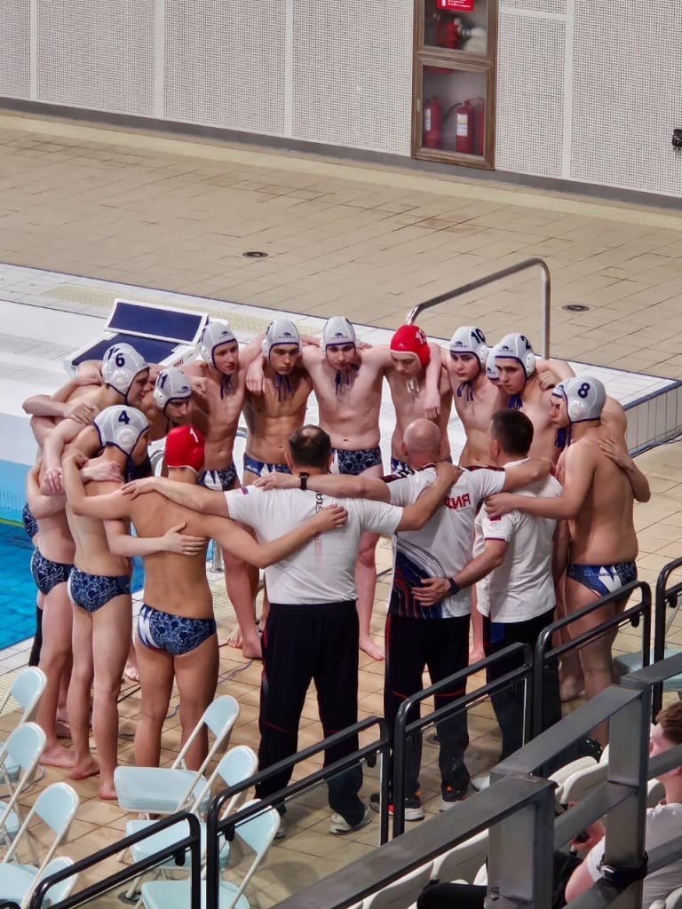
Поздравляем с победой команду Сборной России водному поло! С 9 по 11 мая 2025 года в г.Минск на базе «Бассейна международного стандарта» учреждения «Республиканский центр олимпийской подгот -
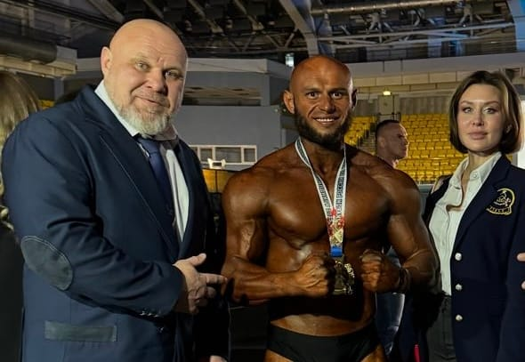
Итоги 37 Кубка России по бодибилдингу и фитнесу г. Ульяновск 2025г. 37-й Кубок России по бодибилдингу и фитнесу прошёл с 24 по 28 апреля 2025 года в Ульяновске. В соревнованиях приняли участие более - Майские праздники в Олимпии! Мы рады, что вы с нами! В спортивном комплексе «Олимпия» стартовали акции, которые помогут вам заботиться о себе с еще большим ком
- Памятка по сальмонеллезу Памятка по профилактике сальмонеллеза ВК49865
-
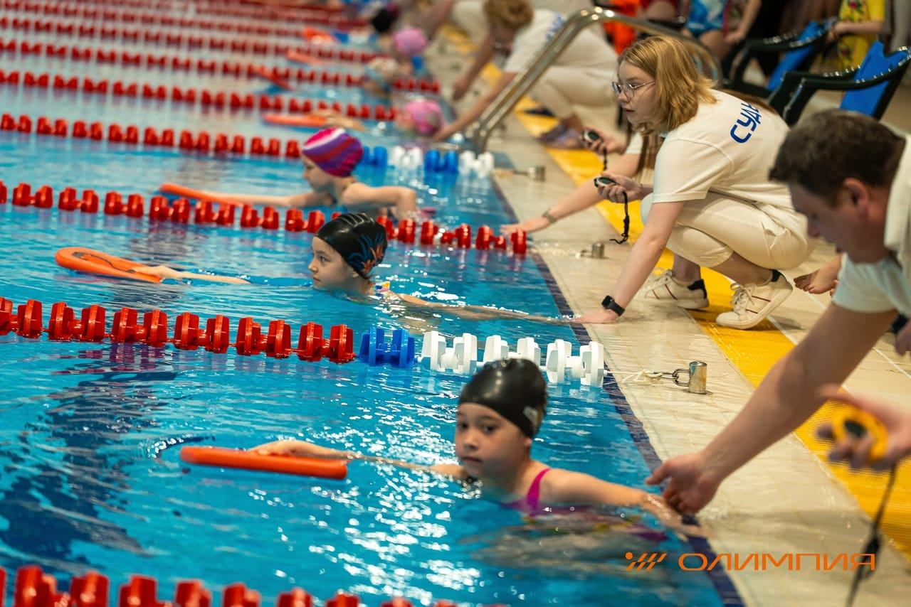
Итоги соревнований программы «Класс» ВЕСНА 2025 27 апреля 2025г. в большом бассейне Спорткомплекса «Олимпия» прошли весенние соревнования по плаванию среди детей, обучающихся по - Ограничение работы бассейна 27 апреля Хотим сообщить, что в связи с проведением соревнований по плаванию участников программы «КЛАСС» среди общеобразовательных школ г.
-
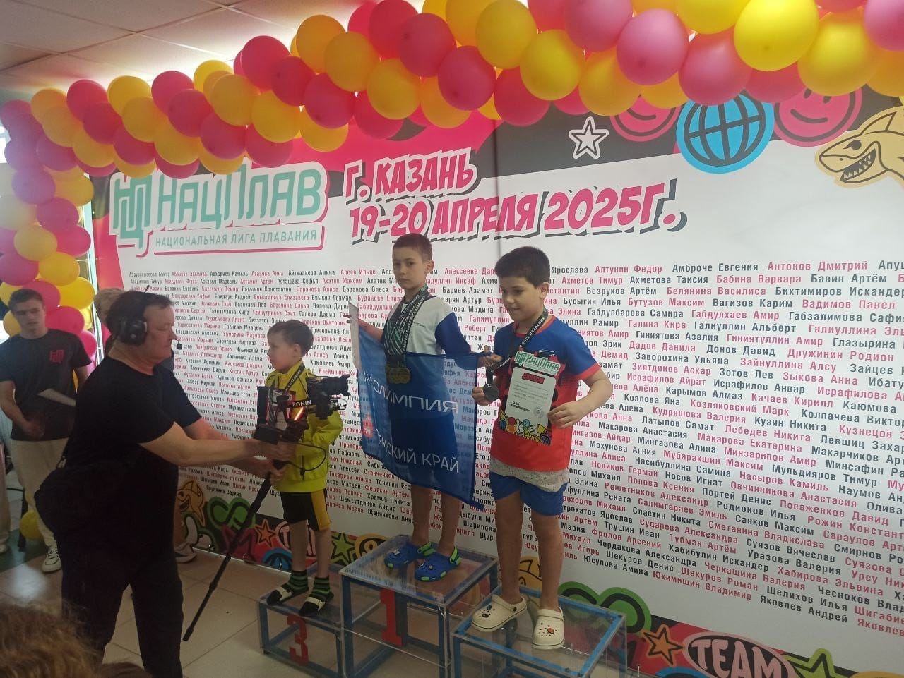
Итоги соревнований по плаванию г. Казань 19–20 апреля «НАЦПЛАВ-ДЕТИ, lll — ЭТАП. 19–20 апреля 2025 года в г. Казань прошли соревнования по плаванию «НАЦПЛАВ-ДЕТИ, lll — ЭТАП. В соревнованиях принимали участие ок -
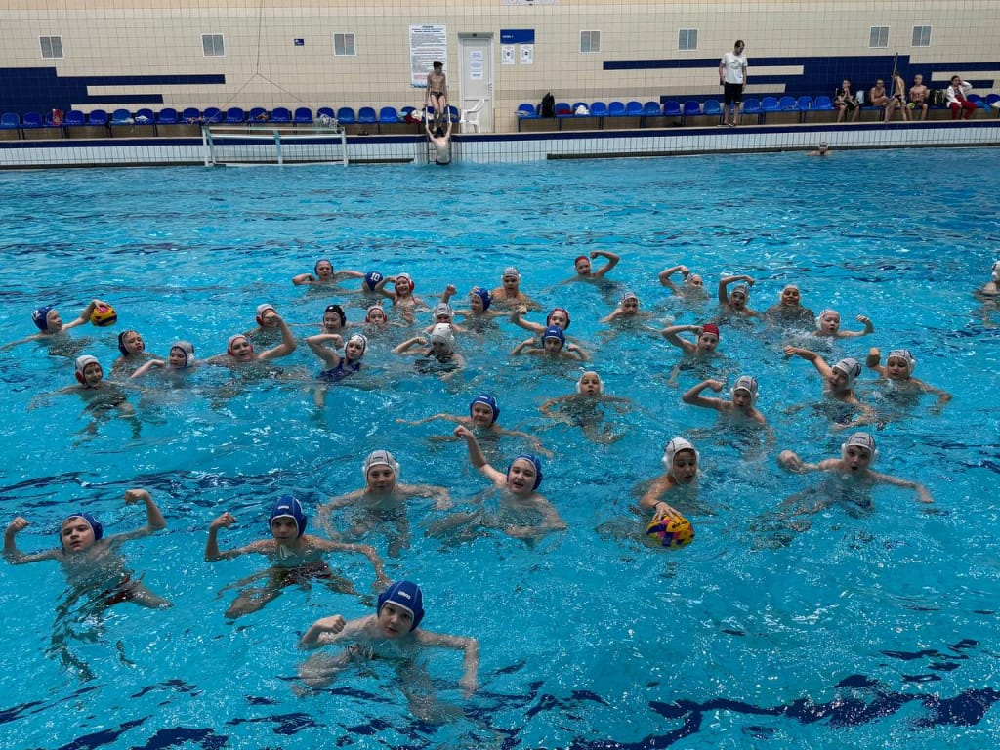
Итоги матчевых встреч г. Челябинск 2025г. С 14.04.2025 по 18.04.2025 прошли матчевые встречи в г.Челябинск. Принимали участие дети 2014г.р и младше, с розыгрышем медалей от -
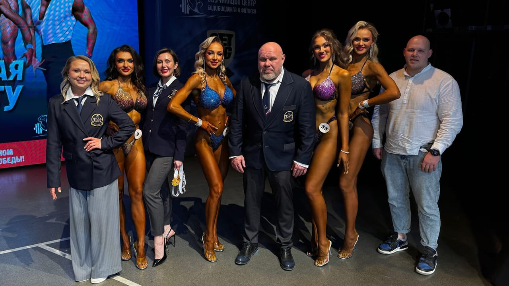
Итоги Кубка Пермского края по бодибилдингу 2025 13 апреля прошел Кубок Пермского края по бодибилдингу, делимся результатами: Максим Смирнов: золото — бодибилдинг — 85; Абсолютный -
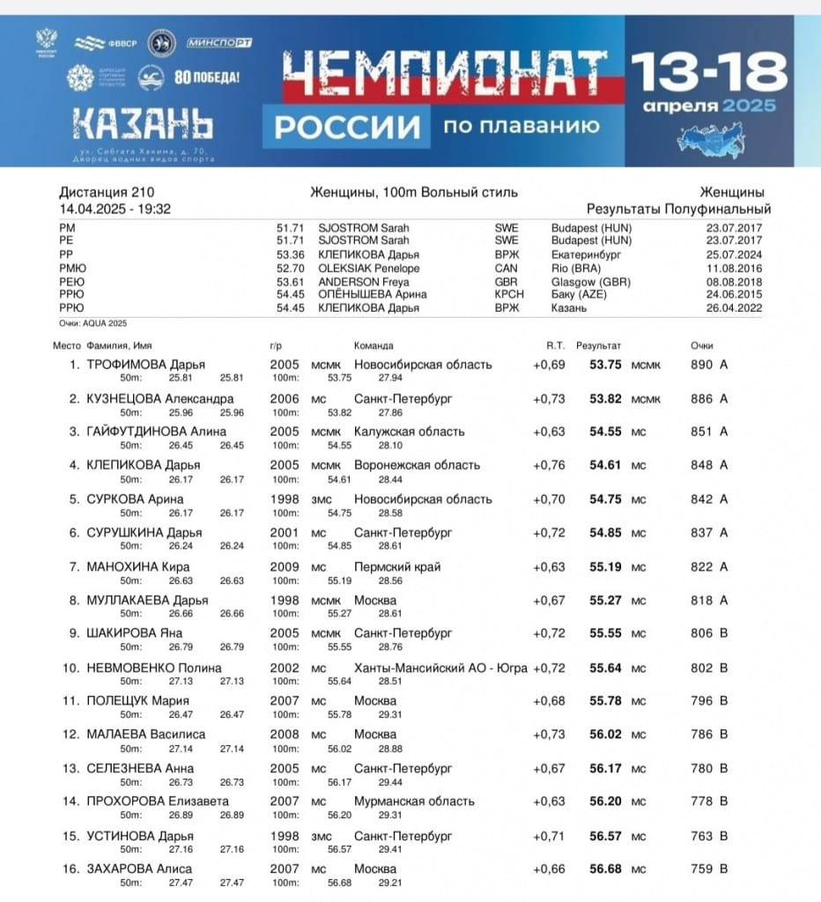
15 апреля — третий день Чемпионата России по плаванию 15 апреля — третий день Чемпионата России по плаванию! По результатам Чемпионатов и Первенств Федеральных округов — девять спортсм - Положение тестовых соревнований по плаванию «ВЕСНА-2025» Уважаемы родители! Ознакомиться с положением тестовых соревнований по плаванию «ВЕСНА-25» среди оздоровительных групп Центра плава
- 9 апреля ограничение работы бассейна Уважаемы гости Спорткомплекса! В связи с проведением соревнований по плаванию есть ограничения: 9 апреля с 10:45 до 15:00 закрыты
- Чемпионат Удмуртии по бодибилдингу 5 апреля 5 апреля прошел чемпионат Удмуртии по бодибилдингу. Наш тренер Власова Любовь взяла серебро и бронзу. Поздравляем! Также поздравля
- 2 этап «RUSTIC CUP» г. Ижевск Завершился 2 этап соревнований "RUSTIC CUP" в г. Ижевск. Поздравляем наших спортсменов с победой! Миронова Дарья 50 батт
- Итоги Всероссийского турнира «Железный трон» г. Челябинск 29 марта 29 марта прошел Всероссийский турнир «Железный трон» г. Челябинск. Поздравляем с победой наших спортсменов: Сабурова Ольга — финал
- Первенство России по подводному спорту в г. Томск 24–30 марта 2025г. 24–30 марта в г. Томск прошло Первенство России по подводному спорту. В соревнованиях принимало участие 449 спортсмена из 24 регио
- Итоги соревнований по плаванию «ll этап первенства Бардымского муниципального округа» 20 марта 2025г. в ФОК «Батыр» с. Барда прошли соревнования по плаванию — «ll этап первенства Бардымского муниципального округа» ср
- 30 марта количество дорожек для свободного плавания ограничено Уважаемые гости! Внимание! 30 марта с 12:00 до 14:00 количество дорожек для свободного плавания будет ограничено в связи с проведе
- Поздравляем с победой воспитанников «Олимпии» Поздравляем с Победой на соревнованиях воспитанников «Олимпии» по Первенству Приволжского ФО. Наши спортсмены показали отличные ре
-
Сертификаты участников соревнований Центра Плавания «ЗИМА 2025»
Поздравляем с завершением финальных соревнований по плаванию среди оздоровительных групп Центра плавания! Ребята показали себя про
- Итоги соревнований по плаванию «Лига плавания БМ-2025–1 этап» 11–12 марта 2025 года в СК «БМ» прошли соревнования по плаванию «Лига плавания БМ-2025–1 этап», посвященный памяти Л. И. Моняковой
-
Итоги соревнований Первенства по подводному спорту, г.Екатеринбург, 08–09.03.25
8–9 марта 2025 в г.Екатеринбург состоялось Первенство Свердловской области по подводному спорту. В соревнованиях приняли участие с
- Поздравляем с победой воспитанников по водному поло! Сборная Пермского края завершила своё выступление в Первенстве России по водному поло среди юношей до 16 лет и вновь наши ребята л
- Режим работы бассейна 4 марта, с 5 по 7 марта (первенство Пермского края по плаванию) 4 марта с 12:00 до 19:00 количество дорожек для свободного плавания ограничено. с 5 по 7 марта с 10:15 до 15:15 закрыты 50-метровы
- Исследование на энтеробиоз с 24 февраля по 2 марта в Спорткомплексе В период с 24 февраля по 2 марта 2025 года в дополнительном мед.кабинете можно сдать анализ на энтеробиоз (без предварительной зап
- Изменения в группах Центра Плавания 01.03.25–15.03.25 1 марта (суббота) в связи с проведением соревнований перенос занятий оздоровительных групп Центра плавания в Большом бассейне ПЕРЕ
- Итоги Чемпионата и Первенства Пермского края по плаванию 11–13 февраля С 11 по 13 февраля в Спорткомплексе «Олимпия-Пермь» состоялся Чемпионат и Первенство Пермского края по плаванию. Соревнования прош
- Пермская сила 2025 — всероссийский мастерский турнир по силовым видам спорта НАП, 22–23 февраля 22–23 февраля 2025г. в фитнес-центре «Олимпия» состоится Всероссийский мастерский турнир по силовым видам спорта НАП «Пермская сил
- Итоги плавательного турнира «НацПлав-Дети. I Этап», г.Ижевск, 1–2.02.25 01–02 февраля 2025 года в г. Ижевск прошли соревнования по плаванию «НацПлав ДЕТИ, I — ЭТАП». В соревнованиях приняли участие боле
- Режим работы бассейна 10–13 февраля (Чемпионат Пермского края по плаванию) С 10 по 13 февраля 2025г. в Спорткомплексе «Олимпия» состоится Чемпионат Пермского края по плаванию. 10 февраля с 12:00 до 19:00 б
- Итоги открытого первенства по водному поло среди юношей 14–17.01.25 с 14 по 17 января 2025 года в г.Челябинск состоялось Открытое первенство ОГБУ ДО «ОСШ по водным видам спорта» по водному поло сред
- Итоги соревнований Masters 7.12.24 7 декабря 2024 года в большом бассейне Спорткомплекса «Олимпия» состоялся ежегодный Открытый кубок Пермского края по плаванию в ка
- Итоги конкурса «Спортивная элита Прикамья 2024» Определены обладатели главной спортивной награды региона «Спортивная элита 2024». На 28ой ежегодной церемонии регионального конкур
- Итоги всероссийских соревнований по подводному спорту «Снежные ласты», г.Томск, 13–17.12.24 13–17 декабря в г.Томск состоялись Всероссийские соревнования по подводному спорту «Снежные ласты». В соревнованиях приняли участи
- Итоги турнира по плаванию «Путь Чемпиона» г.Киров, 11–13.12.24 С 11 по 13 декабря в г.Киров состоялись Межрегиональные соревнования по плаванию «Путь Чемпиона», IV этап и финал, посвященный пам
-
Итоги Всероссийских соревнований по плаванию «Юность России» г.Челябинск, 4–6.12.24
С 4 по 6 декабря в г.Челябинск состоялись Всероссийские соревнования по плаванию «Юность России». К участию в соревнованиях были д
- Результаты соревнований Центра Плавания «Осень-2024» С 5 по 12 ноября прошли Соревнования по плаванию среди оздоровительных групп ЦП (Большой бассейн) «Осень-2024». С результатами сор
- Чемпионат Пермского края по мини водному поло 21.12.24 21 декабря 2024 с 17:00 до 21:00 состоится Чемпионат по мини водному поло на 5-ти дорожках 50-ти метрового бассейна! Во время пров
- XI Пермский краевой семейный форум 13–14 декабря 2024 13–14 декабря 2024 года в Перми состоится XI Пермский краевой семейный форум, который станет площадкой для встречи экспертов и ярк
- Технические работы в мужских саунах фитнес-центра 12–14 декабря С 12 по 14 декабря 2024 будут закрыты мужские сауны в фитнес-центре для проведения технических работ. Душевые будут работать в обы
- Результаты Первенства города по подводному спорту 5–6 декабря состоялось Первенство города Перми по подводному плаванию. В соревнованиях приняли участие около ста спортсменов. Восп
- Результаты Всероссийских соревнований по плаванию «Резерв России» 2024 С 29 ноября по 3 декабря в Саранске состоялись Всероссийские соревнования по плаванию «Резерв России». Эти старты приравнены по св
-
Результаты Всероссийских соревнований по плаванию «Резерв России» 2023
2 декабря в Саранске завершились Всероссийские соревнования по плаванию «Резерв России». Эти старты приравнены по своему статусу к
- ГРАН ПРИ ПЕРМЬ 2024 — открытый кубок Урала по силовым видам спорта НАП, 7–8 декабря 24 7–8 декабря в фитнес-центре «Олимпия» состоится «ГРАН ПРИ ПЕРМЬ 2024» — открытый кубок Урала по силовым видам спорта НАП ! Соревно
- Кубок Золотого Кольца (финальный турнир года, плавание). г.Москва, 30.11–01.12.2024 30 ноября — 1 декабря 2024 в г. Москва прошёл финальный турнир года «Кубок Золотого Кольца». В турнире приняли участие более 700 ч
- Первенство Пермского края по плаванию 12–14 ноября 2024. Итоги С 12 по 14 ноября в Спорткомплексе «Олимпия» прошло Первенство Пермского края по плаванию! 435 пловцов из 12 муниципалитетов регио
- Присоединяйся к своим!
- Первенство Пермского края по плаванию 12–14 ноября 2024 С 12 по 14 ноября в Спорткомплексе «Олимпия» состоится Первенство Пермского края по плаванию. Соревнования будут проходить с целью
- Чемпионат и Первенство по плаванию ПФО 25–28 октября 2024 С 25 по 28 октября 2024 года в г.Саранск прошли Чемпионат и Первенство Приволжского федерального округа по плаванию на короткой во
- Режим работы Спорткомплекса 2 и 4 ноября 2 и 4 ноября Спортивный комплекс «Олимпия» будет работать по следующему расписанию: Бассейны (свободное плавание): 02.11.2024 с 07
- Всероссийские соревнования по подводному плаванию 23–27 октября 2024 С 23 по 27 октября 2024 года прошли Всероссийские соревнования по подводному плаванию в городе Киров. Команда воспитанников Спортк
- Чемпионат России, Пермского края и УрФО по бодибилдингу (осень 2024) 24–27 октября 2024 состоялся Чемпионат и Первенство России по бодибилдингу в г.Екатеринбург Наши результаты: Хусаинов Рустам: Брон
- Соревнования Центра плавания «Осень-2024» С 5 по 12 ноября пройдут соревнования «Осень-2024» по плаванию среди оздоровительных групп, занимающихся в большом бассейне. Элект
- Центральная лестница временно закрыта Уважаемые Гости Спорткомплекса! В связи с ремонтными работами центральная лестница Спорткомплекса временно перекрыта. Входы: в бас
- Чемпионат Пермского края по плаванию 2024 г. С 2 по 4 октября в Спорткомплексе «Олимпия» состоялся Чемпионат Пермского края по плаванию. Определены лучшие пловцы Пермского кра
- 5 этап Кубка Золотого Кольца по плаванию, 28–29 сентября 2024 28–29 сентября 2024 в г. Альметьевске прошёл 5 этап Кубка Золотого Кольца по плаванию. Рудаков Владислав вернулся с соревнований с
- Результаты Всероссийского мастерского турнира по силовым видам спорта «Регион59», 14 сентября 2024 г. 14 сентября 2024 года в фитнес-центре «Олимпия» состоялся Всероссийский мастерский турнир по силовым видам спорта «Регион59». Кома
- V-этап республиканских соревнований по плаванию«RUSTIC CUP» в г. Ижевск 2024 г. 27–29 сентября 2024 года в Ижевске прошел 5-й этап соревнований по плаванию «RUSTIC CUP». Команда воспитанников Спорткомплекса «Ол
- Кафе на смотровой площадке открыто Уважаемые гости Спорткомплекса! С 18.09.24 на смотровой площадке вновь открыто кафе! Не успели позавтракать? Проголодались после т
- Всероссийский мастерский турнир по силовым видам спорта «Регион59» 14 сентября 2024 в Фитнес-центре Олимпия 14 сентября 2024 года в фитнес-центре «Олимпия» состоится Всероссийский мастерский турнир по силовым видам спорта «Регион59» с 9:0
- Cоревнования по плаванию в рамках XII летней Спартакиады учащихся 2024 С 18 по 21 августа в г.Пенза прошли соревнования по плаванию в рамках XII летней Спартакиады учащихся. В течение трех дней во Двор
- Открытое Первенство Венгрии по плаванию 2024г. В Венгрии г. Дебрецене прошел открытый чемпионат Венгрии по плаванию, в рамках которого проходила матчевая встреча пловцов-юниоров
- Чемпионат мира по подводному спорту в г. Белграде, Сербия 10–17 июля С 10 по 17 июля в столице Сербии г. Белграде прошел 23-й Чемпионат мира по подводному спорту. Воспитанница Спорткомплекса «Олимпия
- Тренировка по эвакуации 30.08.2024 в 10:00 Уважаемые Гости Спорткомплекса! 30 августа 2024 г. в 10:00 в спорткомплексе будет проводиться тренировка по эвакуации при возникно
- Детский бассейн «Олимпик» открыт для родителей с детьми до 10 лет (26.08–02.09) Детский бассейн «Олимпик» открыт для родителей с детьми до 10 лет в режиме «свободное плавание» с 26.08.2024 по 02.09.2024. Распис
- Изменение режима работы Спорткомплекса 10–17 августа Уважаемые Гости Спорткомплекса «Олимпия-Пермь» Информируем вас о том, что по техническим причинам будет изменен график работы: 10.
- Открыт кабинет ЭКГ Вы можете пройти обследование ЭКГ прямо в Спорткомплексе “Олимпия”. Режим работы кабинета ЭКГ: — понедельник — пятница с 09:00 до
- Международные соревнования «Спортивные игры стран БРИКС» в г.Казань 19–21 июня 2024 г. С 19 по 21 июня прошли состязания по плаванию на Международных соревнованиях «Спортивные игры стран БРИКС» в г.Казань. Сборная Рос
- Режим работы 12 июня 12.06.2024 спорткомплекс работает в следующем режиме: — бассейны (свободное плавание) с 08:00 до 22:30 по тарифам выходного дня (в
- Открыт набор в спортивные группы детей 2013–2014 г.р. С 01.09.2024 возобновляются тренировки спортивных групп детей 2013–2014 г.р. , тренер Русских А. А. Подробности по телефону +79082
- Первенство города по подводному спорту 03–04 июня 03–04 июня в г. Перми прошло Первенство города по подводному спорту. Отличные результаты показали воспитанники Олимпии! Поздравляе
- Национальный чемпионат по силовым видам спорта «Пермский период» 18–19 мая 2024 18–19 мая 2024 года в фитнес-центре «Олимпия» прошёл десятый национальный чемпионат по силовым видам спорта НАП — «Пермский период
- Соревнования по водному поло 8 июня Уважаемые Гости Спорткомплекса! В Олимпии 08 июня 2024 г. с 12:00 до 15:00 пройдет Кубок по мини водному поло среди любителей на 5
-
Итоги первенства ПФО по водному поло 26–30 мая
с 26 по 30 мая 2024 года в физкультурно-оздоровительном комплексе ДЕЛЬФИН Пензенской области прошло Первенство Приволжского Федера
-
Результаты выпускных соревнований Центра Плавания 26.05.2024
26 мая 2024 прошли Выпускные соревнования по плаванию среди оздоровительных групп ЦП. В соревнованиях приняли участие 240 пловцов
-
Результаты соревнований Центра Плавания «ФИНАЛ-2024»
19 мая прошли Соревнования по плаванию среди оздоровительных групп ЦП (Большой бассейн) «ФИНАЛ-2024». В соревнованиях приняли учас
- Итоги первого краевого фестиваля проекта «Умею плавать» 25 мая 2024 25 мая состоялся первый краевой фестиваль проекта «Умею плавать» Ребят и тренеров приветствовала зам.министра физической культуры
- Итоги XXIV Открытый турнир по плаванию «Уральский дельфин» 23–25 мая 2024 С 23 по 25 мая состоялся XXIV Открытый турнир по плаванию «Уральский дельфин» в г.Оса! В соревнованиях приняли участие 300 спортсм
- Соревнования по водному поло 14–17 мая С 14 по 17 мая 2024 г. в бассейне ЦСКА ВМФ прошли городские соревнования по водному поло, посвященные Дню Победы и памяти Героя Ро
- Режим работы большого бассейна 19 мая, финальные соревнования ЦП Уважаемые посетители! 19 мая с 8:00 до 12:00 будут закрыты 50-метровый бассейн и комплекс саун в связи с проведением финальных сор
- Национальный чемпионат по силовым видам спорта «Пермский период 2024» 18–19 мая в Фитнес-центре В Фитнес-центре состоится Национальный чемпионат по силовым видам спорта «Пермский период 2024» от НАП Пермь : 18.05.2024 (суббота
- Народная премия — спортивный центр города Дорогие Гости нашего спорткомплекса! В этом году мы принимаем участие в народной премии от 59.ру и для входа в ТОП-10 и участия в
- Соревнования «Кубок Золотого Кольца» в г. Казани 20–21 апреля 2024 в г. Казани прошёл 3 этап Кубка Золотого Кольца по плаванию. Рудаков Владислав вернулся с соревнований с отличны
- Режим работы с 27 апреля по 12 мая Бассейны (свободное плавание): — 27.04.2024 с 07:00 до 22:30 по тарифам буднего дня; — 28.04.2024 с 08:00 до 22:30 по тарифам выхо
- Результаты соревнований Центра Плавания «Весна-2024» С 13 по 20 апреля прошли Соревнования по плаванию среди оздоровительных групп ЦП (Большой бассейн) «Весна-2024». С результатами со
- Режим работы большого бассейна 26 мая, выпускные соревнования ЦП 26 мая с 8:00 до 12:00 будут закрыты 50-метровый бассейн и комплекс саун в связи с проведением выпускных соревнований Центра плава
- Первенство России по плаванию г.Краснодар 22–26 апреля 2024 С 22 по 26 апреля 2024 года в г.Краснодар прошло Первенство России среди юношей и девушек, где принимали участие 1000 юношей и дев
- Итоги соревнований программы Класс 28.04.2024 28 апреля 2024 в большом бассейне Спорткомплекса «Олимпия» прошли соревнования по плаванию среди детей, обучающихся по программе «
- Соревнования по Бодибилдингу весна 2024 6 апреля прошел Кубок Пермского края по Бодибилдингу и Турнир «Мастера Бодибилдинга». Наши результаты: Мальцев Максим /наш гость/:
- Кабинет ЭКГ временно не работает до 30.04.2024 Сообщаем вам, что кабинет ЭКГ в Спорткомплексе временно не работает с 17 по 30 апреля 2024. Запись на ЭКГ будет доступна с 1 мая 2
- Соревнования по плаванию 28 апреля Уважаемые Гости Спорткомплекса! В Олимпии 28 апреля 2024 г. с 08:00 до 12:00 пройдут соревнования по плаванию по программе «Класс»
- Соревнования Центра плавания «Весна 2024» С 13 по 20 апреля согласно расписанию занятий будут проходить соревнования по плаванию среди оздоровительных групп Большого бассей
- Чемпионат и Первенство ПФО по плаванию 19 марта 2024г. 19 марта 2024 г. в г. Пензе прошел Чемпионат и Первенство ПФО по плаванию. В соревнованиях приняло участие более 900 спортсменов и
- Бесплатная заморозка клубных карт Уважаемые гости спорткомплекса! Для клубных карт «Плавание», «Фитнес» и «Фитнес+плавание», приобретенных с 01 января 2024 года, до
- Итоги соревнований Первенства Пермского края по плаванию «Веселый дельфин» с 5–7 марта С 5 по 7 марта в нашем спортивном комплексе прошло Первенство края по плаванию «Веселый дельфин»! В соревнованиях приняли участие
- Итоги Чемпионата и Первенства Пермского края по плаванию с 14–16 февраля Поздравляем победителей и призеров Чемпионата и Первенства Пермского края по плаванию 14–16 февраля 2024 Победители: Колышкин Арте
- График работы Спорткомплекса 8 марта 8 марта 2024 года будет изменен график работы: — Бассейны (свободное плавание): с 08:00 до 22:30 по тарифам выходного дня; — Спа ц
- «Женский день» в Фитнес-центре 5 марта 5 марта 2024 года пройдет Женский день в фитнес-центре Олимпия. Время проведения — с 18:30 до 20:10 Приглашаем провести предпраздн
- «Кубок Золотого Кольца» 24–25 февраля 2024 24–25 февраля 2024 в г. Ижевск прошел 1 этап соревнований »Кубок золотого кольца». Наши спортсмены показали отличные результаты за
- Режим работы бассейна 27–28 февраля 27 и 28 февраля с 10:45 до 14:00 будет закрыт 50-метровый бассейн и комплекс саун в связи с проведением Чемпионата и Первенства Пе
- Всероссийские соревнования по плаванию в ластах в г. Челябинск С 22–25 января 2024 г. в г. Челябинск, прошли Всероссийские соревнования по плаванию в ластах. На этих соревнованиях, воспитанники
- Кубок России по подводному спорту февраль 2024 На Кубке России, проходившем с 13 по 18 февраля наша воспитанница Полина Некрасова завоевала 2 медали! — золото на дистанции 1500
- I этап Республиканских соревнований по плаванию «RUSTIC CAP» 2024 С 27 по 28 января в г. Ижевск прошел I этап Республиканских детских соревнований RUSTIC CUP, где воспитанники «Олимпии» показали о
- График проведения родительских собраний центра плавания — зима 2023/2024 Здравствуйте, Сообщаем вам график проведения зимних родительских собраний в Спорткомплексе Олимпия. Хотим напомнить, что собрания
- Первенство Перми по ММА 27 января В субботу 27 января с 11.00 до 16.00 состоится Первенство Перми по ММА (юниоры) на главной сцене фитнес-центра. При планировании с
- Итоги соревнований программы Класс 24.12.2023 года 24 декабря 2023 в большом бассейне Спорткомплекса «Олимпия» прошли соревнования по плаванию среди детей, обучающихся по программе
- Дополнительные группы по профилактике плоскостопия и сколиоза В Центре плавания открыты дополнительные группы по профилактике плоскостопия и сколиоза «Профилактика плоскостопия и сколиоза» по
- Налоговый вычет -13% за услуги Спорткомплекса Уважаемые клиенты! Спорткомплекс «Олимпия» в списке компаний, предоставляющих спортивно-оздоровительные услуги, по которым можно п
- Закрытие глубоководного бассейна и гидромассажной зоны 16–19 января С 16 по 19 января 2024 год глубоководный бассейн и гидромассажная зона будут закрыты в связи с плановым ремонтом кровли спорткомпл
-
Республиканские соревнования по плаванию на призы Деда Мороза — 2023
21–22 декабря прошли Республиканские соревнования по плаванию на призы Деда Мороза — 2023, посвящённые 10-летию XXVII Всемирной ле
-
Всероссийские соревнования по подводному спорту — декабрь 2023
20–24 декабря в г. Заречный прошли Всероссийские соревнования по подводному спорту (дисциплина — плавание в ластах). В них принима
- Результаты соревнований по водному поло 2023 Сегодня хотим поделиться сразу двумя новостями от наших спортсменов по водному поло! 1 новость В начале декабря состоялось открыто
- Спортивная Ёлка 19 декабря Уважаемые посетители Спорткомплекса «Олимпия»! 19 декабря с 13.00–14.00 приглашаем взрослых и детей на нашу уже традиционную спорт
- 23.12.23 центр кинезитерапии работает с 9:00 до 18:00 Уважаемые клиенты, 23 декабря (в субботу) центр кинезитерапии работает с 9:00 до 18:00! Планируйте ваши тренировки с учетом измене
- Всероссийские соревнования «Снежные ласты» 2023 В Томске прошли Всероссийские соревнования «Снежные ласты» с 8 по 12 декабря Некрасова Полина завоевала золото, на дистанциях: 150
- Всероссийские соревнования по плаванию «Юность России» 2023 С 6 по 9 декабря в Краснодаре прошли Всероссийские соревнования по плаванию «Юность России». В течение трех дней состязаний в 25-м
- Ограничение работы бассейна 10 декабря Хотим сообщить, что в связи с проведением соревнований по плаванию АО «СП — КРОН», количество дорожек для свободного плавания буде
- Чемпионат Пермского края по синхронному плаванию 2023 26.11.2023 с 9:00 до 11:00 в Спорткомплексе «Олимпия» состоится Чемпионат Пермского края по синхронному плаванию. Трибуны будут от
- Ограничение работы бассейна 2 декабря В связи с проведением Открытого кубка Пермского края по плаванию «MASTERS» 2 декабря будут ограничения в работе бассейна: с 18:15
-
VI этап Республиканских детских соревнований RUSTIC CUP
В Ижевске прошел VI этап Республиканских детских соревнований RUSTIC CUP, где воспитанники «Олимпии» показали отличные результаты!
- Чемпионат и первенство Приволжского федерального округа по плаванию Во Дворце водных видов спорта Саранска завершились чемпионат и первенство Приволжского федерального округа по плаванию. За медали
- Ограничение работы бассейна с 14 по 16 ноября В связи с проведением Первенства Пермского края по плаванию 14–16 ноября будут ограничения в работе бассейна: 14.11.2023 — с 12:00
- Парковка для родителей детей Центра плавания Для вас – 15 минут на парковке Олимпии бесплатно! Начиная с 16-й минуты стоимость услуг парковки составит 40 руб. за каждый полный
- Режим работы спорткомплекса 6 ноября Режим работы спорткомплекса на 6 ноября: Бассейны — c 7:00 до 22:30 (тарифы буднего дня); Центр фитнеса — c 7:00 до 22:30 (тарифы
- Осторожно, гололед! Во время перемещения по скользкой улице не спешите, избегайте резких движений, постоянно смотрите себе под ноги! Перемещайтесь по
- Соревнования по плаванию на кубок Урала в Челябинске 2023 23–24 октября в г. Челябинск, проходили соревнования на кубок Урала. На этих соревнованиях наши ученики из Центра плавания завоева
- 27 октября ограничения работы бассейна В связи со сдачей норм ГТО студентами Пермского края: 27.10.2023 — с 12:00 до 13:00 количество дорожек для свободного плавания буд
- Включение горячей воды 13.10 в 17:30 В связи с аварией на Теплосетях г. Перми в душевых перебои с горячей водой. Авария устранена. В течение 30–40 минут температура во
- Чемпионат Пермского края по плаванию осень 2023 В Перми подвели итоги Чемпионата Пермского края по плаванию, который прошел 4 и 5 октября 245 спортсменов в составе 22 команд прие
- V-этап кубка «RUSTIC CUP» в г. Ижевск 2023 г. 30 сентября — 1 октября 2023 года в Ижевске прошел 5-й этап соревнований по плаванию «RUSTIC CUP». Команда воспитанников Спорткомп
- Чемпионат Пермского края и Удмуртской республики по Бодибилдингу В самом разгаре сезон соревнований по бодибилдингу и наша команда показывает отличные результаты! Чемпионат Пермского края по Боди
- 30 сентября ограничение работы бассейна и изменение расписания в Центре плавания 30 сентября в рамках Всероссийской спартакиады компанд предприятий ПАО «СИБУР Холдинг» «Камская осень» в Спорткомплексе «Олимпия»
-
Первенство Пермского края по водному поло 2023 года
24 сентября 2023 года состоялось Первенство Пермского края по водному поло среди юношей до 16 лет Команда «Олимпия» заняла 2 место
- Запись детей в Центр Плавания (осень 2023) с 20.08.23 Запись детей в Центр плавания на Осенний цикл 2023 Режим записи: ежедневно с 9:00 до 20:00 в фойе спорткомплекса. Умение плавать —
- Бесплатная программа обучения безопасности на воде в августе В Спорткомплексе «Олимпия» будет проведена программа по безопасности на воде, бесплатно. В рамках программы пройдут занятия для вз
- 5 золотых медалей на II Играх стран СНГ (плавание) Кира Манохина завоевала пять золотых медалей на Играх стран СНГ С 10 по 13 августа в г.Брест прошел турнир по плаванию в рамках ме
- Открытый Кубок Прикамья по подъёму штанги в Фитнес-центре «Олимпия» 15.07.23 Обращаем внимание, что 15 июля 2023 в Фитнес-центре «Олимпия» состоится Открытый Кубок Прикамья по подъёму штанги на бицепс «Жара-
- Всероссийские соревнования по подводному спорту В городе Балаково (Саратовская область) прошли Всероссийские соревнования по подводному спорту. В соревнованиях приняли участие сп
- 18-й Чемпионат мира по плаванию в ластах CMAS среди юниоров С 19 по 25 июня 2023 года в международном олимпийском бассейне Наср-Сити (Египет) прошел 18-й Чемпионат Мира по плаванию в ластах
- 17 июня Кубок по мини водному поло среди любителей В Олимпии пройдут соревнования по любительскому водному поло 17 июня с 11:00 до 16:00 на 4-х дорожках 50-ти метрового бассейна! Пр
- Сборная «Олимпии» на турнире «Уральский дельфин» 24–26 мая 2023 24–26 мая в бассейне СШ им.Лобанова прошёл XXIII ежегодный турнир «Уральский дельфин». В турнире приняли участие 13 команд и более
- Результаты соревнований Центра Плавания «ФИНАЛ-2023» 21 мая прошли Соревнования по плаванию среди оздоровительных групп ЦП (Большой бассейн) «ФИНАЛ-2023». С результатами соревнований
- Всероссийские соревнования по плаванию «Веселый дельфин» С 15 по 19 мая в Санкт-Петербурге проходили всероссийские соревнования по плаванию «Веселый дельфин» — главный турнир страны для п
- Первенство России по подводному спорту Ярославль С 11 по 15 мая 2023 года в г. Ярославль во ДВС «Лазурный» прошло Первенство России по подводному спорту (плавание в ластах, плаван
- Первенство по плаванию «Салют Победы» С 3 по 5 мая 2023 года в городе Ревда Свердловской области проходил турнир Первенство ГО Ревда по плаванию «Салют Победы» среди сп
- Первенство России по плаванию 2023 С 25 по 29 апреля в Саранске проходило Первенство России по плаванию, где в течение пяти дней более 950 участников соревновались з
- Результаты соревнований Центра Плавания «Весна-2023» С 15 по 22 апреля прошли Соревнования по плаванию среди оздоровительных групп ЦП (Большой бассейн) «Весна-2023». С результатами со
- Первенство Перми по подводному спорту (плавание в ластах) 24–25 апреля 24–25 апреля в бассейне Рекорд проходит Первенство города Перми среди юношей и девушек 2012 г.р и младше. По итогам первого соревн
- Всероссийские соревнования по плаванию «Пермская волна» 30–31 марта в Перми прошли Всероссийские соревнования по плаванию в честь 300-летия Перми «Пермская волна» при поддержке компаний
- Всероссийские соревнования по водному поло «Золотой мяч» Первый тур всероссийских соревнований по водному поло «Золотой мяч-2023» стартовал матчами в 4 городах — Волгограде, Дзержинске, Р
- Кубок Пермского края и Чемпионат Удмуртии по бодибилдингу 25 марта прошёл кубок Пермского края по бодибилдингу. Команда Олимпии показала прекрасные результаты и стала лучшей сразу в нескол
- Соревнования по плаванию «RUSTIC CUP 2 этап» г.Ижевск 25–26 марта 2023 команда воспитанников Спорткомплекса «Олимпия» принимала участие в соревнованиях по плаванию «RUSTIC CUP 2 этап»
- Первенство России по подводному спорту г.Томск С 24–29 марта 2023г. в г. Томске в ЦВВС «Звездный» состоялось Первенство России по подводному спорту (плавание в ластах, плавание
- Первенство России по водному поло Команда Пермского края по водному поло (дети до 14 лет) стала победителем Первенства России по 2-й группе. В финале Первенства уча
- Детская секция триатлона на базе Спорткомплекса Олимпия Уважаемые дети и родители! Федерация Триатлона Пермского края при поддержке Федерации триатлона России, ОАО «Уралхим» открывает де
- 19 марта соревнования по фридайвингу в Олимпии 19 марта с 09:00 до 12:00 на 2-х дорожках большого бассейна Спорткомплекса «Олимпия» пройдут соревнования по фридайвингу. Соревнов
- График соревнований в Спорткомплексе «Олимпия» на 2023 год Уважаемые гости! Олимпия — это крупнейший спортивный комплекс в Пермском крае. 50 метровый бассейн олимпийского стандарта является
- Всероссийские соревнования по плаванию «Mad Wave Classic» 2023 18–19 февраля в казанском Дворце водных видов спорта прошли Всероссийские соревнования по плаванию «Mad Wave Classic»! Воспитанник
- Веселый дельфин-2023 С 1 по 3 марта в спорткомплексе «Олимпия» прошел региональный этап Всероссийских соревнований по плаванию «Веселый дельфин». В теч
- Пермская сила 2023 Пермская сила 2023 — ежегодный турнир, проводимый традиционно в стенах Фитнес-центр «Олимпия». В общекомандном зачете спортсмены «
- Учимся вместе! Занятия плаванием взрослый и ребенок С 12 марта стартуют занятия по новой программе совместного обучения плаванию «Взрослый и ребенок» , где родитель под руководством
- 1 этап турнира Кубок Золотого Кольца 2023 25–26 февраля 2023 в Ижевске состоялся Детский турнир по плаванию — Кубок «Золотого кольца». Команда Спорткомплекса «Олимпия» дост
- Режим работы Спорткомплекса 8 марта 8 марта Спортивный комплекс «Олимпия» будет работать в следующем режиме: Бассейны (свободное плавание), СПА-центр: с 08:00 до 22:3
- Изменение режима работы бассейна 28 февраля — 3 марта Уважаемые гости! В связи с проведением Первенства Пермского края по плаванию: 28 февраля с 12:00 до 19:00 количество дорожек для с
- Результаты соревнований Центра Плавания «Зима-2023» С 4 по 11 февраля прошли Соревнования по плаванию среди оздоровительных групп ЦП (Большой бассейн) «Зима-2023». С результатами сор
- Режим работы Спорткомплекса 23–24 февраля 23–24 февраля Спортивный комплекс «Олимпия» будет работать в следующем режиме: Бассейны (свободное плавание), СПА-центр: с 08:00 д
- Соревнования по плаванию «RUSTIC CUP» г.Ижевск (1 этап) 4–5 февраля 2023 года в Ижевске прошел 1-й этап соревнований по плаванию «RUSTIC CUP». Команда воспитанников Спорткомплекса «Олимп
- Всероссийские соревнования по водному поло «Золотой мяч» Команда воспитанников Спорткомплекса «Олимпия» успешно выступила на Всероссийских соревнованиях по водному поло «Золотой мяч». Поз
- Всероссийские соревнования по подводному спорту г. Челябинск 24–27 января, в г. Челябинск проходили Всероссийские соревнования по подводному спорту. На этих соревнованиях отлично выступили и
- 3 тур Первенства России по водному поло 17–20 января 2023 г.Пенза прошли игры 3 тура Первенства Росси среди юношей до 14 лет по водному поло, в котором принимают участие
- Изменение режима работы Спорткомплекса 25–26 января Уважаемые гости! В связи с проведением ремонтных работ на трубопроводе ООО «Новогор-Прикамье» 25 и 26 января 2023 Спортивный компл
- Соревнования по плаванию «RUSTIC CUP» г.Ижевск 24–25 декабря 2022 года в Ижевске прошел заключительный 9-й этап соревнований по плаванию «RUSTIC CUP». Команда воспитанников Спор
- Межрегиональные соревнования по плаванию г.Кирово-Чепецк 15–17 декабря в Кирово-Чепецке прошли соревнования по плаванию памяти МСМК Яны Шамаровой. Команда воспитанников Спорткомплекса «Ол
- В Санкт-Петербурге прошел новогодний турнир «На призы Деда Мороза» 26–27 декабря 2022 в Санкт-Петербурге прошел ежегодный Новогодний турнир по водному поло «На призы Деда Мороза 2022». Пермский кра
- Всероссийские соревнования по подводному плаванию 20–24 декабря 20–24 декабря в г. Заречный прошли Всероссийские соревнования по подводному плаванию среди юниоров. Соревнования собрали более 350
- Предновогодний турнир по мини водному поло г. Березники 25 декабря в городе Березники прошло традиционное Первенство города по мини водному поло. Мини-водное поло – это популярная и дост
За выбранный период в этом разделе ничего нет. Снимите фильтр или выберите другой год.